The application Bio7 is an integrated development environment for ecological modelling and contains powerful tools for model creation, scientific image analysis and statistical analysis. The application itself is based on an RCP-Eclipse-Environment (Rich-Client-Platform) which offers a huge flexibility in configuration and extensibility because of its plug-in structure and the possibility of customization. Over the past years Bio7 evolved to a general simulation and analysis platform also useful for a variety of other scientific disciplines. In this platform powerful known tools were integrated for the purpose of simulations and analysis. The complexity of a modelling process is hidden behind a user-friendly flexible Graphical User Interface which should assist the development and analysis of simulation models. Therefore Bio7 offers and embeds also powerful and well proofed third party tools which are capable to do Image Analysis (ImageJ), Statistical Analysis (R), easy to learn scripting languages to ease the development of simulation models and an embedded compiler for the need of speed in complex calculations. Additionally editors (Java, R, BeanShell/Groovy, Python) and different panels for visualization are integrated for an easier development. Communication in between the different components is possible by means of scripts and compiled code and can be collected in a executeable flowchart for “Sensitivity Analysis”, etc. Furthermore an advantage of this platform is the plugin structure which can be extended with all kind of third party plugins to support theoretical hypothesis on ecosystems functioning and the understanding of complex systems. \begin_inset Separator latexpar\end_inset
The application Bio7 was originally developed for the chair of experimental and systems biology (Bio7) to create and analyze spatially explizit simulation models on dry acidic grasslands on inland sand dunes. Only specialists like Corynephorus canescens, Polytrichum piliferum, etc. can settle on this nutrient poor water limited sandy soils. Additionally high temperatures on the surface of the soil and erosion make it very hard for other species to settle there. In comparison to other ecosystems this habitat is less complex in its species structure and nutrient dynamics which facilitates monitoring of vegetation dynamics to identify the driving forces or key factors of the system. With the exploration of this ecosystem several questions and hypothesis should be answered and verified. Because many specialized plants and animals occur in this habitat the main question is, how we can protect and preserve this valuable ecosystem at all. Also the key factors are from high interest and can maybe serve to identify similar processes in more complex systems like the tropical rainforest. From various experiments in these systems we have knowledge about seed dispersal, competition, and nutrients availability or dependencies from different species which are typical for this habitat. We use the capabilities of this application to express the features of this system in syntactical rules for simulation.
A 64-bit operating system: macOS (Apple Silicon), Windows (x86_64) or Linux (x86_64, aarch64).
At least 4 GB of memory (8 GB or more are recommended for large images, stacks and volumes).
A graphics card with OpenGL for the 3D view (Space view) and the WorldWind view.
R 4.3 or later for the R features of Bio7 (R is not bundled with Bio7, see below).
Optional: Python 3.8 or later (embedded Python), Quarto (Quarto documents), pandoc and LaTeX (R Markdown documents and PDF output) and LibreOffice (the LibreOffice features of Bio7). The path to LibreOffice is fetched from the registry (Windows) or can be set in the Bio7 preferences.
Bio7 includes its Java runtime (Eclipse Temurin 27 with Nashorn): no Java installation is needed.
The installation files of Bio7 are available on the GitHub Releases page of Bio7 (https://github.com/Bio7/bio7/releases). The checksums of all files are in the file SHA256SUMS.txt.
Download the file bio7-<version>-windows-x86_64.zip and unzip it in a folder of your choice (avoid spaces in the path). Start Bio7.exe. Bio7 is not signed with a Windows certificate: if SmartScreen warns at the first start, click More info > Run anyway.
Download the file bio7-<version>-macos-aarch64.dmg (Apple Silicon), open it and drag Bio7 to the Applications folder. Bio7 is not notarized by Apple, so macOS blocks it at the first start ("Apple could not verify ’Bio7’ is free of malware"). Open System Settings > Privacy & Security, scroll down to the message about Bio7 and click Open Anyway (once for each version). Alternatively type in the Terminal:
Removes the quarantine flag of Bio7 (macOS Terminal)
The camera (e.g., OpenCV in Python) needs the permission of macOS: macOS asks for it the first time. In this case start Bio7 from the Finder or the Dock, not from a terminal.
Download the file bio7-<version>-linux-<arch>.tar.gz (x86_64 or aarch64), unpack it and start Bio7. The 3D views (Space view and WorldWind) need the X11 backend of GTK: on a Wayland desktop start Bio7 with GDK_BACKEND=x11 ./Bio7 (XWayland).
At the first start Bio7 creates its workspace (the default location on macOS is ~/Bio7/workspace). The projects, the scripts and the settings of Bio7 are stored in the workspace.
Bio7 embeds R directly: R runs in the process of Bio7 (with the Foreign Function & Memory API of Java). No Rserve, no JNI and no extra R package is needed: only an installed R 4.3 or later. The data are transferred directly between R and Bio7 (the R-Shell view, the Table view, ImageJ, the editors and the scripts). With an older R version Bio7 reports "Embedded R needs R 4.3 or later".
Install R from CRAN (https://cran.r-project.org) with the installer of your operating system (Windows, macOS) or with the package manager (Linux, e.g., sudo apt install r-base). Bio7 uses the default installation of R automatically. Another R installation is selected in the R preferences (Preferences Bio7 > Preferences R, Path to R). The button R Setup... (Find or install R) searches the installed R versions on this computer: Use for Bio7 sets the path to R (applied at the next start of R). The dialog also helps to install R (the commands for the operating systems, Open R Download Page, on Windows Install R with winget).
R is started with Start R in the main toolbar or in the R menu (optionally at the startup of Bio7: Preferences Startup, Start R). The R preferences describe the restrictions of embedded R:
R can be interrupted (Interrupt R in the menu of the Start R action, Ctrl+C in the console or the stop button of the R-Shell view), but not terminated or restarted without a restart of Bio7.
A crash of R (e.g., of a package) ends Bio7: save your work.
parallel::mclapply() runs sequentially (mc.cores = 1); other parallel methods (e.g., socket clusters) are available.
The memory used by R is displayed in the status line (R: ... MB). The R preferences are described in 4.6.3.13↓.
R commands which should run at each start of R (e.g., to set paths) can be added in the field R startup commands of the R preferences.
The R packages are installed in the R library of the used R installation (or in the Package install location of the R preferences) with the Packages view of the R perspective or in R. Some R packages are recommended to use all functions of Bio7 (e.g., for the formatting of R code, R Markdown documents, spatial data and image analysis). They can be installed with a script in the context menu of the R-Shell view (Packages > Install_Default_R_Packages).
On Linux the R packages are compiled from the sources: the compilers g++ and gfortran must be installed. The spatial packages (e.g., sf, terra) need in addition the development files of GDAL, PROJ and GEOS (e.g., libgdal-dev, libproj-dev, libgeos-dev), some packages BLAS and LAPACK (libblas-dev, liblapack-dev).
Bio7 embeds Python like R: CPython runs in the process of Bio7 (data transfer with numpy and pandas, matplotlib plots in Bio7, a Python debugger, see 4.7↓). Python is optional and not bundled. Python 3.8 or later is needed, built with a shared library (e.g., the installers of python.org, Homebrew, conda or the Python of a Linux distribution). The packages numpy, pandas and matplotlib are recommended.
The Python is selected in Preferences Bio7 > Preferences Python:
Path Python: the folder of the Python installation. Detect Python... (Find Python on this computer) searches the installed Python versions.
Embedded Python: executes the Python code in the process of Bio7 (data transfer, plots). A change of the Python needs a restart of Bio7 (only one Python can run in a Bio7 session).
Python Packages... (Install, upgrade, uninstall packages) opens the Python Packages dialog: it installs, updates and removes packages, installs bundles of packages for Bio7 (scientific, images, OpenCV, editor tools) and can create a virtual environment for Bio7 (Create Bio7 Environment...). With Install packages with uv instead of pip the packages are installed with uv.
Execute Editor Source in Seperate Python Process: executes the scripts of the Python editor in a separate Python process (not in the Python-Shell of Bio7).
In the embedded Python exit() and input() are not available.
R Markdown documents (*.Rmd) need the R packages rmarkdown and knitr and the program pandoc (https://pandoc.org). Quarto documents (*.qmd) need Quarto (https://quarto.org). Bio7 finds pandoc, LaTeX and Quarto also if they are not on the PATH of the system (the default installation folders; Quarto also with the environment variable QUARTO_PATH). PDF output needs a LaTeX installation (see below) or, for Quarto, Typst.
If a program is not found the path can be added to the PATH of R with an R startup command (R preferences, R startup commands), e.g., on macOS:
R command to add the paths of pandoc and LaTeX to the PATH of R (macOS)
It is also possible to install Bio7 on an Usb-Stick with the described procedure. Moreover LibreOffice can also be installed portable with Bio7. Download the portable version (http://portableapps.com/apps/office/libreoffice_portable) and adjust the LibreOffice path to the LibreOfficePortable\App\libreoffice\program subfolder in the Preferences.
For an increased Java heap space open the Bio7.ini file in the install directory of Bio7. In the file you can change the default memory settings e.g. the initial heap size -Xms and the maximum heap space -Xmx.
For an increased Java heap space open the Bio7 package (context menu if you click on the icon) then go to Contents/MacOSX and open the Bio7.ini file with a text editor. In the file you can change the default memory settings e.g. the initial heap size -Xms and the maximum heap space -Xmx
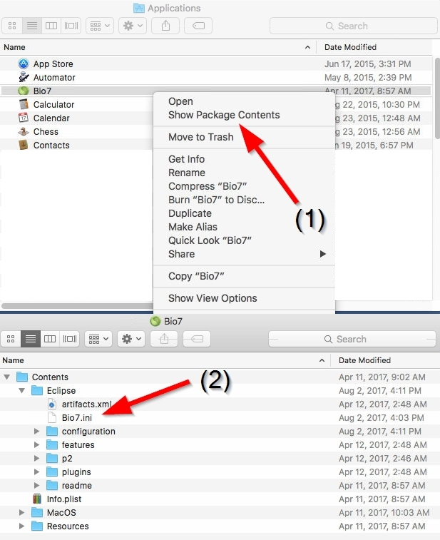
Figure 2.2 Open the package (1) on MacOSX to change the Bio7.in file (2) for more Java memory, etc.
After Bio7 has been launched an Eclipse workbench window is displayed. A window contains a page with an arrangement of views and editors whose layout is defined by a perspective. The perspectives are switched in the perspective bar, views and editors can be moved, stacked, minimized, maximized (double-click on a tab) and detached.
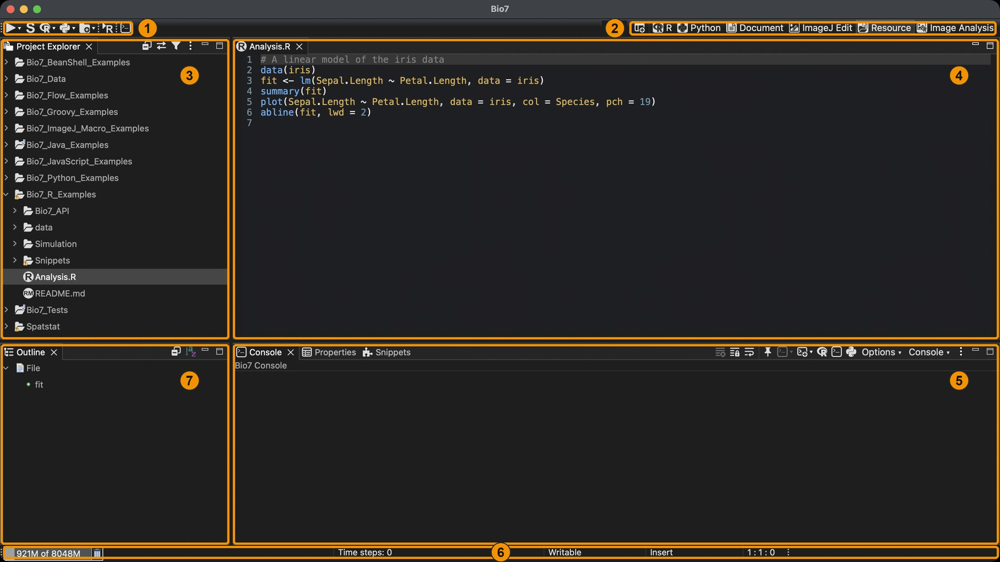
Figure 3.1 The components of the Bio7 window (Resource perspective with an R script, dark theme)
(1) The main toolbar with the actions of Bio7 and of the active editor (see below).
(2) The search (Ctrl/Cmd+3): finds commands, views, perspectives and preferences by their names.
(3) The perspective bar: opens and switches the perspectives (e.g., R, Document, ImageJ Edit, Resource, R ImageJ Analysis, 3d, WorldWind, Web, Custom).
(4) and (8) Views, e.g., the Project Explorer and the Outline.
(5) The editor area with the opened editors (e.g., the R editor).
(6) Views below the editor, e.g., the Console, the Properties and the Snippets.
(7) The status line: the memory (a click on the trash icon starts the garbage collection of Java), the selection, the time steps of a simulation (see Counter Reset) and the state of the editor (e.g., Writable, Insert, the line).
The toolbar contains the default actions of Bio7 which are described below. Editors and plugins add their own actions to the toolbar (e.g., the actions of the active editor). The toolbar can be hidden with Window > Show/Hide Toolbar.
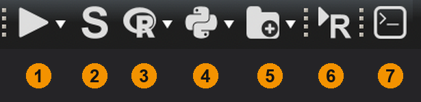
Figure 3.2 The toolbar of Bio7 (with the action of the R editor)
(1) Play/Pause: Starts or stops a simulation: the repeated, time based invocation of the run method of a compiled Java class (a class which extends the class Model). The menu of the action contains Set Time Interval (the interval of the invocation) and Counter Reset (sets the time steps of the status line to 0).
(2) Setup: Invokes the setup method of the compiled Java class (if available).
(3) R: Starts the embedded R (see 4.6↓). The menu of the action contains Start R and Interrupt R. R runs in the process of Bio7 and can’t be restarted without a restart of Bio7.
(4) Create Projects or Files: Creates a project with a default file in one step: a Bio7 Java project (also with a WindowBuilder GUI, OpenGL, WorldWind or an ImageJ plugin), a project with an R, R Markdown, Quarto, R Shiny, Python, Groovy, JavaScript, ImageJ macro or LaTeX file, a WindowBuilder GUI for a Bio7 model, R or Python, a reproducible project or another project or file (Other...).
(5) Editor actions: The actions of the active editor, e.g., Interpret R for the R editor, the compilation of Java code for the Java editor or Interpret ImageJ Macro for the ImageJ macro editor.
(6) Open a Terminal: Opens a terminal (a shell of the operating system) in the Terminal view.
The menu bar of Bio7 contains the menus for the work with the components of the application:
File: New projects and files, Save, Save All, Save As, Refresh, Import and Export of projects and files and Restart in Debug Mode... (a restart with a port for a Java debugger).
Edit: Undo, Redo, Cut, Copy, Paste, Delete, Find/Replace, Select All and Print for the editors of Bio7.
Search: The search in files and projects.
Preferences: Opens the preferences of Bio7 (see 6.1↓).
Scripts: Submenus with own scripts (BeanShell, Groovy, Python, R scripts and ImageJ macros) of special folders (see 10.3↓).
R: The actions for the interaction with R and the transfer of data (see 4.6.1↓).
Window:Show Selected View, Show View and Open Perspective, Show/Hide Editor, Show/Hide Toolbar, Show All Menus, Hide All Menus and Fullscreen/Hide Menus, Switch Theme... (see 10.4↓) and Save Perspective As (a custom arrangement of views).
Help: The help of the application, the dynamic help, Bio7 Internet (the Browser view), the installation of new software and updates (see 8↓) and the About dialog (with the uninstallation of plugins).
LibreOffice can be connected with the R-Shell view and the Table view of Bio7 (see 9.5↓).
In the perspective bar several different perspectives can be activated via the perspective buttons. All the views or editors in the perspective can be closed, opened, detached or moved. The perspectives in Bio7 can be extended with several other views which can be opened in the Windows\SpecialChar menuseparatorViews menu or with the default action in the status bar at the bottom left of the program. Additionally self defined perspectives can be created or deleted. From the Eclipse Workbench User Guide (http://help.eclipse.org): “Perspectives provide combinations of views and editors that are suited to performing a particular set of tasks....”
To open a new perspective:
Click the Open Perspective button on the shortcut bar on the left side of the Workbench window. (This provides the same function as the Window \SpecialChar menuseparator Open Perspective menu on the menu bar.)
To see a complete list of perspectives, select Other... from the drop-down menu.
Select the perspective that you want to open. When the perspective opens, the title bar of the window changes to display the name of the perspective. In addition, an icon is added to the shortcut bar, allowing you to quickly switch back to that perspective from other perspectives in the same window.
After Bio7 has been started the perspective in front is the Resource perspective. The parts of the Resource perspective are:
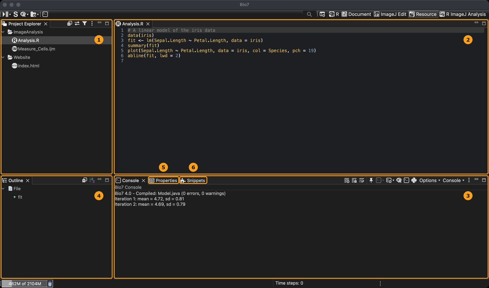
Figure 4.1 The parts of the Resource perspective (dark theme)
(1) The Project Explorer view to import, export, open and manage files.
(2) The Editor area where the editor files are opened.
(3) The Console of Bio7.
(4) The Outline view (active when an editor has been opened).
(5) The Properties view which shows the selected file properties .
(6) The Snippets view in which snippets for the different text based editors of Bio7 can be created.
The context menu of the Project Explorer (a right-click) contains several file actions. Some actions are only visisble if a special file type is selected (e.g. the R Packages actions are only visible when an R file is selected).
In the Project Explorer files can be managed and stored. The context menu offers several actions to import and export files for the available Bio7 editors and specialized actions dependant on the selected filetype. All the files are managed by projects which can have folders and subfolders, etc. for managing a large amount of different files. These projects and their files can be exported or imported as *.zip files for data exchange. The file navigator (Project Explorer view) of Bio7 allows you to create different editor files with a help of a file wizard. A double-click on the file in the file navigator will open the file in the default registered editor.
Paste Clipboard as File... (context menu, Cmd/Ctrl+Shift+V in the Project Explorer) creates a new file from the text of the clipboard (e.g., an R script or an ImageJ macro copied from a web page) in the selected project or folder. The type of the code is detected (R, ImageJ macro, Java, BeanShell, Python, Groovy, JavaScript, R Markdown, Markdown, Sweave, LaTeX, HTML or text) and gives the extension of the suggested file name, which can be changed. The file is opened in its editor.
The editor area is the area where all files are opened and edited. The context menu varies depending on which file is opened. When opened the text based editors offer typical text functionalities like: Copy, Paste, Undo, Redo, Cut, Find/Replace, Print, etc. in the context menu and in the edit menu (menubar) of Bio7. When a file has been opened editor specific buttons will be added to the toolbar which execute an editor action according to the opened file (compilation respectively interpreting code of Java, BeanShell, Groovy, Python, R or execution of a Flow!). The editor area can be enabled in every perspective with the Window\SpecialChar menuseparatorShow/Hide Editor action in the main Bio7 menu.
The Bio7 console gives access to several interpreted languages and a pseudo-terminal for the Operating System (OS) environment. In the view menu the different modes can be selected.
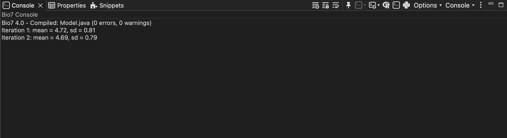
Figure 4.2 The Console view of Bio7 (the Options and Console menus are in the toolbar of the view)
The script consoles (Beanshell, Groovy, Python) can interactively communicate with the Bio7 application or simply interpret different instructions in the selected scripting language.
The Shell pipes commands to the underlying OS with a pseudo-terminal.
The Native R and Native Python consoles pipe commands to the different applications (Please adjust the paths to the language environments in the Preferences! See: 10.1↓).
The default enabled Console Output only displays errors and prints messages. In addition it pauses the REPL (read–eval–print loop).The Console is responsible for the:\begin_inset Separator latexpar\end_inset
Output messages for the interpreters and connected applications.
Output messages of the embedded Java compiler (compiler warnings, infos, etc.)
Output of the R interpreter (warnings, etc.) and evaluated expressions in R.
In the context menu of the Console view several actions are available to clear displayed text or copy text from the console to the clipboard.
In the Options menu of the Console view text encoding properties, font settings and special interpreter commands can be selected. As already noted in the Console menu the different interpreters and native connections (R, Python, OS shell) can be selected.
In the Snippets view code templates can be created and stored for the different editors in Bio7. The Snippet view plugin comes from the WTP project (https://eclipse.org/webtools/wst/components.html). To create snippets inside this view, categories have to be created inside a template editor (Customize... action in the context menu). This editor can be opened with a right-click in the Snippets view. Copied text from any text based editor of Bio7 can be pasted directly as a snippet after a category has been created inside the view. In addition selected text in an editor can be stored as a template. More complex templates with variables and a detailed description can be created, too. This is extremely useful if you want to create custom formulas or statistics. A created template can be transferred to an active opened editor with a double-click of the mouse device. Optional the different categories can also be folded and customized for a better overview (see figure below).
Note: By default every text based editor of Bio7 has an integrated template editor for the different programming languages with default snippets.
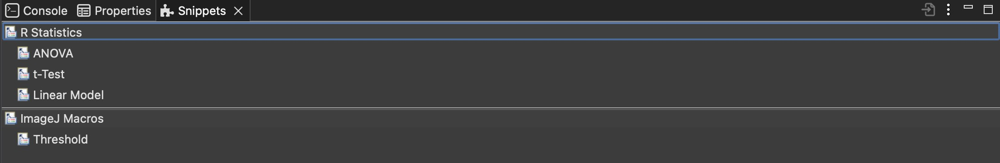
Figure 4.3 The Snippets view with two categories of snippets
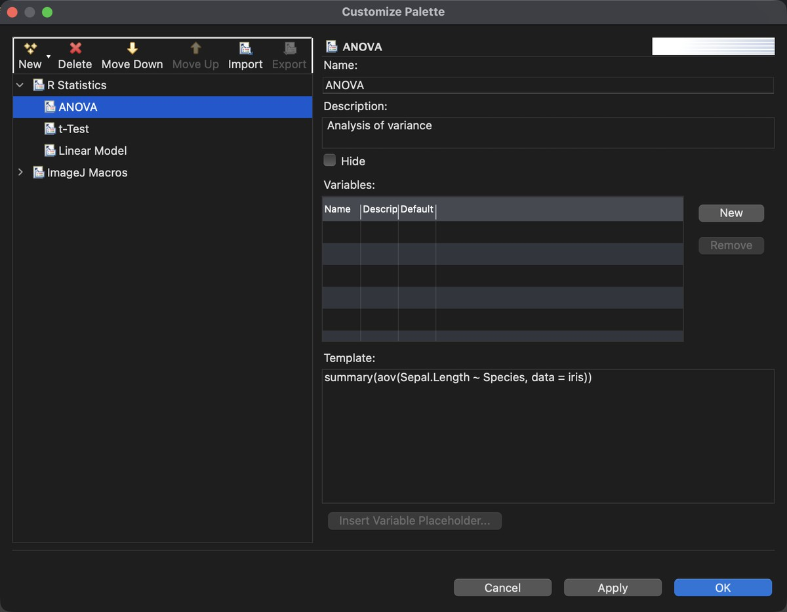
Figure 4.4 The Customize... dialog of the Snippets view available in the context menu
The ImageJ Edit perspective is the default perspective for image analysis and supports the creation of ImageJ macros, scripts and Java plugins. ImageJ macros, etc. can directly be opened and edited in a Bio7 editor (BeanShell, Groovy, Python, JavaScript, ImageJ Macro, Java plugins) from the Project Explorer and executed with the interpret action in the main toolbar of Bio7. The perspective contains the Project Explorer, the Thumbnails view, the editor area, the Outline, the Console and the debug view of the ImageJ macro editor and on the right side the ImageJ-Canvas view.
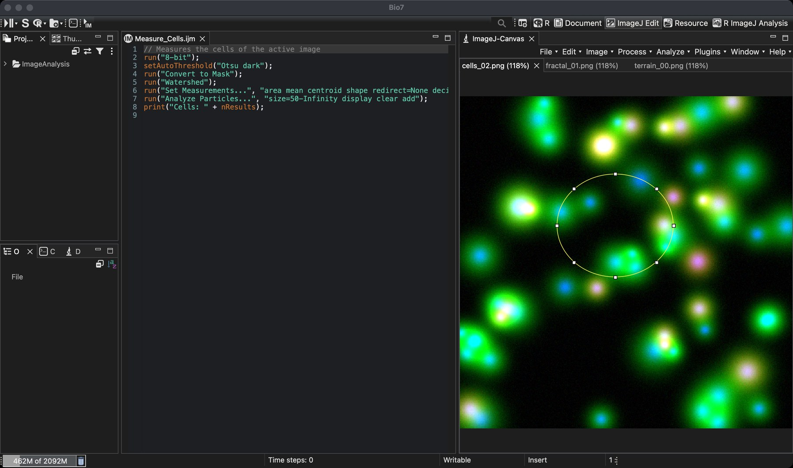
Figure 4.5 The ImageJ Edit perspective with a macro and images in the ImageJ-Canvas view (dark theme)
Bio7 embeds SWTImageJ, a version of ImageJ with a native SWT user interface (instead of the former AWT version which was embedded with the SWT_AWT bridge). The images, the menus, the toolbar, the dialogs and the tools of ImageJ are SWT widgets, so they follow the theme of Bio7 (e.g., the dark theme) and work well on high DPI displays. For a description of ImageJ see https://imagej.net/ij/ and the user guide https://imagej.net/ij/docs/guide/. The differences to the regular version of ImageJ are:
The images are displayed in the tabs of the ImageJ-Canvas view or as detached image views (see below). An image becomes active when its tab or view is selected.
The menu of ImageJ (File, Edit, Image, Process, Analyze, Plugins, Window, Help) is the menu of the ImageJ-Canvas view.
The toolbar of ImageJ (with the status line and the progress bar) is the ImageJ-Toolbar view.
Two actions compile or interpret the source of the active editor on the classpath of ImageJ: Plugins > Compile Java (Eclipse) and Plugins > Interpret Script (Eclipse).
The actions for the transfer of image data to and from R are available in the Image-Methods view (Window > Bio7-Toolbar, see 4.3↓).
Installed plugins extend the menus of the ImageJ-Canvas view. Macros can extend the main menu of Bio7 and can be created like in the regular version.
Images, folders (as a stack) and plugins can be dropped on the ImageJ-Canvas view.
The ImageJ API is accessible with the embedded Java compiler and with BeanShell, Groovy, JavaScript, ImageJ Macro or Python scripts. Many examples of the ImageJ website can be executed directly in the editors of Bio7.
An image can be displayed in its own view: Window > Open Current Image as View detaches the active image, Window > Open All Images As Views detaches all images and with Window > Open Images As Views By Default new images are opened as views (also a preference). By default a detached view is opened in its own window which follows the active perspective (see the ImageJ preferences). Closing the view closes the image. Many images (e.g., the images of a stack, Image > Stacks > Stack to Images) are opened as views quickly in one step.
Window > Cascade Image Views and Window > Tile Image Views arrange the windows of the image views: cascaded (with the sizes of the windows) or as a grid which fills the monitor. With more than one monitor a submenu selects the monitor. Window > Fullscreen Image (F2) displays the active image in the fullscreen mode (F2 the primary monitor, F3 the secondary, F4 the tertiary, F5 a selected monitor, Escape exits).
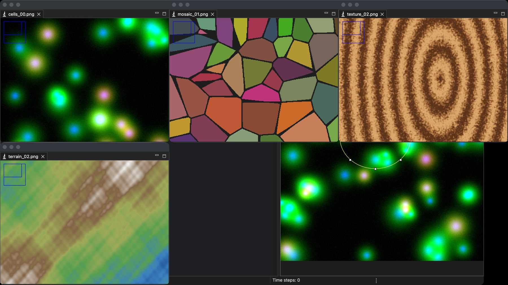
Figure 4.6 Image views in windows, arranged with Window > Tile Image Views
The toolbar of ImageJ is the ImageJ-Toolbar view (Window > ImageJ-Toolbar, in the R ImageJ Analysis perspective below the editor area). It contains the tools of ImageJ, the status line and the progress bar. A double-click or a right-click on a tool opens its options like in ImageJ. Macros for the toolbar can be installed (as known from ImageJ).
Bio7 supports plugins and macros for ImageJ. The default folders are:
Bio7/plugins/com.eco.bio7.image_x.x.x/plugins
Bio7/plugins/com.eco.bio7.image_x.x.x/macros
Plugins which are copied into the plugins folder extend the menu Plugins with submenus. Plugins > Utilities > Control Panel displays all installed plugins. The SWTImageJ LLM Assistant (a plugin which connects SWTImageJ with OpenAI compatible language models, e.g., of OpenAI, LM Studio or Ollama) is installed by default. Its window can be docked as a custom view of Bio7 and its code tools mark errors, warnings and infos in the editors of Bio7 (a quick fix is applied with a double-click on the marked text).
In the ImageJ preferences (Preferences Bio7 > Preferences ImageJ) the Plugins Path can be changed (the macros are loaded from the macros folder next to the plugins folder, a restart is necessary), the size of the Image Methods and the ImageJ toolbar dialogs and the settings of the detached image views: Open new images as views by default, Open detached views in a window and the position, the size and the spacing of new image windows. The subpages contain the preferences of the ImageJ macro editor (colors, code, templates, etc.).
ImageJ plugins can be compiled with the compile action of ImageJ (e.g., Plugins > New > Plugin) or with the Java editor of Bio7 (Plugins > Compile Java (Eclipse)). The file creation wizard of Bio7 contains templates for ImageJ plugins and filters.
The R ImageJ Analysis perspective combines image analysis with statistical analysis: the R tools (R-Shell, Packages, Console, Plot, R Snippets, the editor area) and the ImageJ tools (the ImageJ-Canvas view, the ImageJ-Toolbar, the Image-Methods view and the Geometry Selections view) are arranged side by side.
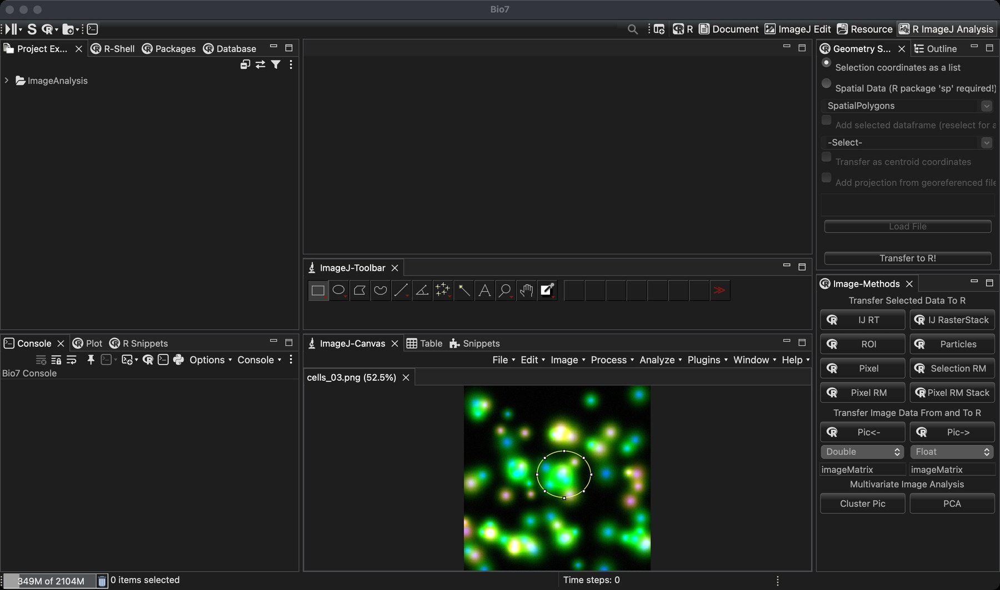
Figure 4.10 The R ImageJ Analysis perspective
4.3.1 Image Analysis with R or Python (the R/Python Switch)
The image analysis views Image-Methods and Geometry Selections work with R or with Python. The language is selected with the two radio buttons R and Python in the toolbar of the Image-Methods view or of the Geometry Selections view. A switch in one view switches the other view, too, and the choice is kept for the next start of Bio7. With the switch:
the icons of the views and of their buttons change to the R or the Python icon, the groups are named Transfer Selected Data To R (To Python) and Transfer Image Data From and To R (From and To Python);
the Python-Shell view and the Python Packages view are opened instead of the R-Shell view and the Packages view of R (with the option Image-Methods: the switch R/Python closes the views of the other language of the Python preferences the views of the other language are closed);
the actions transfer the data to the workspace of the selected language and the analyses run in R or in Python.
The actions of the Image-Methods view in Python (the names of the created Python objects):
IJ RT: the ImageJ results table as the pandas DataFrame IJResultsTable.
IJ RasterStack: the opened stack as imageStack (numpy arrays).
ROI: the coordinates of the selection as selectionx and selectiony.
Particles: the results of the particle analysis as the DataFrame Particles.
Pixel: the pixels of the selection as a DataFrame (optionally with a class column).
Selection RM: the selections of the ROI Manager as roiSelections.
Pixel RM, Pixel RM Stack: a DataFrame for each selection and all pixels as roi_pixels.
Pic<-, Pic->: the image as a numpy array and an array as an image.
Cluster Pic: a k-means cluster analysis with scikit-learn (without scikit-learn with numpy) which creates the cluster image and plots.
PCA: a principal component analysis with scikit-learn which creates the images of the components and plots of the explained variance and the loadings.
In the Geometry Selections view the selections are transferred as lists of numpy arrays (coordinates) or as spatial data with the Python packages shapely and geopandas (polygons, lines or points, optionally with the columns of a selected pandas DataFrame). The projection of a georeferenced file is read with rasterio. Transfer to Python! creates the objects. The Python packages numpy, pandas, matplotlib, scikit-learn, shapely, geopandas and rasterio are used (they can be installed in the Python Packages view).
The Image-Methods view (Window > Bio7-Toolbar in the ImageJ-Canvas menu, displayed by default in the R ImageJ Analysis perspective) contains the actions to transfer image data to and from R (a connection to R is necessary, see the R perspective).
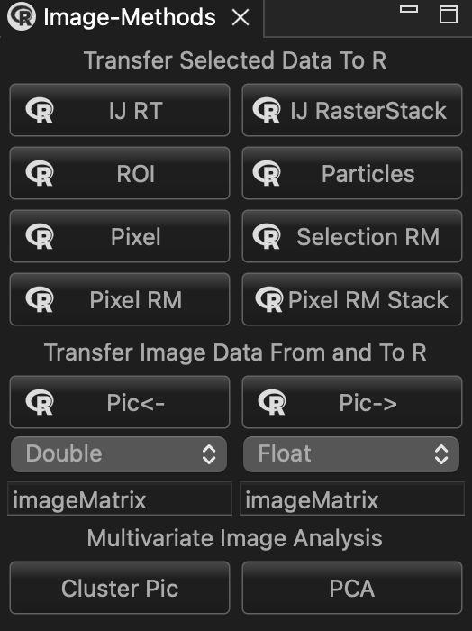
Figure 4.11 The Image-Methods view
Transfer Selected Data To R
IJ RT: Transfers the values of an opened ImageJ Results Table to R as a dataframe.
IJ RasterStack: Transfers an opened ImageJ stack as a list of matrices or (with the option Raster?) as a RasterStack to R. The data type is selected in the combo box below Pic<-.
ROI: Transfers the x, y coordinates of the current selection (ROI) to R.
Particles: Opens the Analyze Particles dialog of ImageJ, the results of the particle analysis are transferred to R as a dataframe.
Pixel: Transfers the selected pixels (freehand, rectangle, etc.) of one or several images with or without a signature as a matrix to R.
Selection RM: Transfers the coordinates of the selections of the ROI Manager as a list of lists to R (see the Geometry Selections view for spatial data).
Pixel RM: Transfers the pixels of the selections of the ROI Manager (all images) with or without a signature as a matrix to R.
Pixel RM Stack: Transfers the pixels of the selections of the ROI Manager for all slices of a stack with or without a signature as a matrix to R.
Transfer Image Data From and To R
Pic<-: Transfers the image data of the active image to R with the name of the text field below and the data type of the combo box (Double, Integer, Byte or RGB Byte).
Pic->: Creates an image from an R matrix or vector (the name of the R object in the text field below) with the image type of the combo box (Colour, Greyscale, Float, Short or Double). The type Double creates a 64-bit double image of SWTImageJ (the values of R without a conversion to float).
Multivariate Image Analysis
Cluster Pic: Performs a cluster analysis (clara or kmeans) and creates a new image from the assigned pixels.
PCA: Performs a principal component analysis and creates new images from the components.
With Pic<- and Pic-> the data of the active image are transferred to R or image data from R to ImageJ in a selected data type (image type). It is good practice to transfer the image data in the smallest data type needed for a task. In addition special transfers are available for selected image data:
Pixel transfers the data of the current selection (one selection) of one or several images (opened tabs or views) in the selected data type without the ROI Manager.
Pixel RM transfers the pixels of the selections of the ROI Manager (the selected selections or all selections if none is selected) for all opened images with a selected or an incremental signature. If a stack is among the opened images only the first slice is transferred.
Pixel RM Stack transfers the pixels of the selections of the ROI Manager for all slices of a stack (e.g., multispectral or hyperspectral image data) with a selected or an incremental signature.
Note that image folders can be dropped on the ImageJ-Canvas view to load the images as a regular or virtual stack (in a virtual stack only the displayed image is loaded into the memory). A description of the ROI Manager can be found in the ImageJ user guide. With the option ROI Manager in the Bio7 ImageJ preferences the ROI Manager is displayed as a view (with the ImageJ icon) instead of a window.
4.3.2.2 Supervised Classification with ImageJ and R
The custom class signatures of Pixel RM and Pixel RM Stack are especially useful for a supervised classification of image data in R: every selection could represent a vegetation or a tissue type (e.g., a plant species or a tumor) with several spectral bands (the slices of a stack) for the training of a classifier. See the Bio7 examples (https://github.com/Bio7/Bio7) and the Bio7 classification plugin (https://github.com/Bio7/Bio7_Classification).
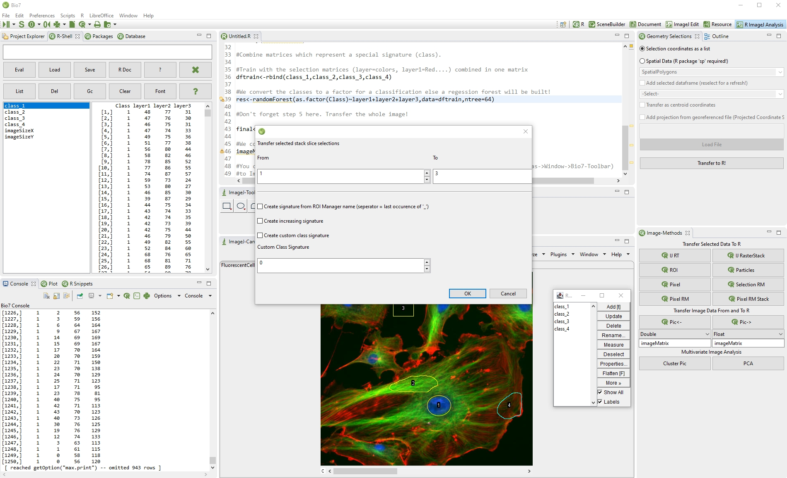
Figure 4.12 Pixel RM Stack: the transfer of the selected pixels of a stack (RM = ROI Manager)
With ROI single and with Selection RM multiple selection coordinates can be transferred to R, e.g., for a shape analysis or morphometrics. ImageJ has several actions to edit the selections in the menu Edit > Selection, e.g., an interpolation with a spline or the convex hull to reduce the number of points.
The Geometry Selections view transfers the selections of the ROI Manager:
Selection coordinates as a list: the selections as a list of coordinates.
Spatial Data (R package ’sp’ required!): the selections as SpatialPolygons, SpatialLines or SpatialPoints (with an R dataframe as SpatialPolygonsDataFrame, SpatialLinesDataFrame or SpatialPointsDataFrame, see Add selected dataframe).
Transfer as centroid coordinates transfers the selections with the centers of the grid cells instead of the top left corners (e.g., for point data). Add projection from georeferenced file adds the projection of a georeferenced raster image (e.g., *.geotiff, a projected coordinate system) to the spatial object in R: the projection is read with GDAL or, if GDAL is not available, with the R package terra. Transfer to R! creates the objects in the R workspace.
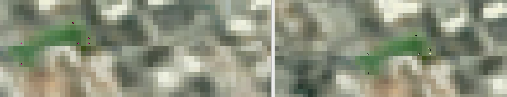
Figure 4.14 Transfer of point selections as centroids (left: GIS display of the transferred point vector data, right: the selections in ImageJ)
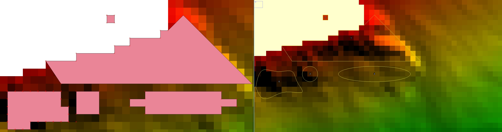
Figure 4.15 Transfer of different selection types (right) and the result in a GIS display (left)
Cluster Pic and PCA open dialogs for an unsupervised classification (the algorithms clara and kmeans) and a principal component analysis of the image data. In the dialog the number of clusters (components) can be specified and arguments can be added. The images (opened tabs or views) for the analysis are selected in the lists. Only Transfer transfers the image data to R without an analysis. The data type (Pic<-) can reduce the memory of the analysis drastically.
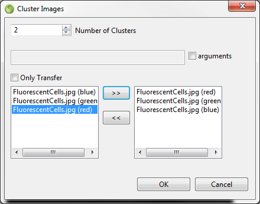
Figure 4.16 The dialog of the cluster analysis with the selected images
The Thumbnails view displays the images of a folder as thumbnails: in the context menu of the Project Explorer select Open in Thumbnail view on a folder or select a folder with Open in the view. The thumbnails are created in parallel and cached in the memory and on the disk, so that thousands of images are displayed fast and a second display of a folder is immediate.
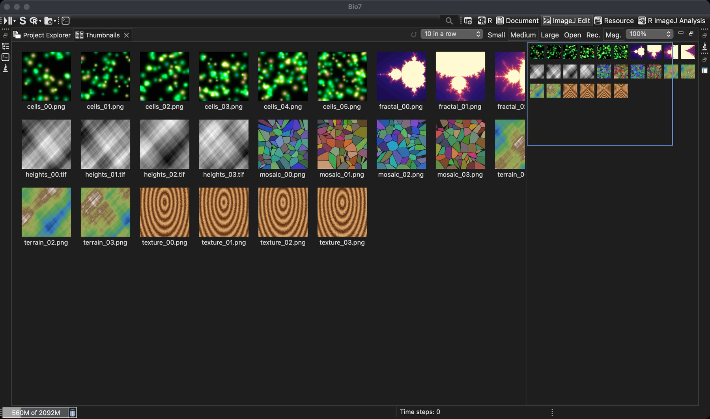
Figure 4.17 The Thumbnails view (maximized) with the overview on the right side
Images in a row: The number of thumbnails in a row or Fit width (the combo box).
Small, Medium, Large: The size of the thumbnails (50, 100 or 200 pixels).
Open: Selects the folder which is displayed. Rec. includes the images of the subfolders (recursive).
Mag.: Shows or hides the overview of all thumbnails at the right side. The blue rectangle shows the visible part and can be moved.
Zoom: The zoom of the thumbnails (the combo box).
Refresh: Lists the folder again and reloads the thumbnails.
The images which ImageJ opens are displayed (e.g., *.tif, *.png, *.jpg, *.gif, *.bmp, *.dcm), an *.avi file with its first frame, a *.zip file with the first image of a stack (or the ROIs of a ROI Manager file), *.roi and *.txt files (e.g., macros, results) with an icon. A folder with LUT files (*.lut) displays a sample image with each LUT: a click on the thumbnail applies the LUT to the active 8, 16 or 32-bit image.
The 3d perspective of Bio7 visualizes data, models and simulations in an OpenGL view (Jogl). It combines several tools in one 3D view: an interactive plot API for 3D plots and charts (surfaces, scatter plots, bars, box plots, pie charts, etc.) with an export to an interactive web page (WebGL) or to Blender, the display of height maps from ImageJ images, the volume rendering and iso surfaces of ImageJ stacks with clipping, cuts and 3D measurements, the import of 3D models (*.obj, *.stl, *.ply, *.off) and custom OpenGL code (Java) for models and simulations. In addition interactive HTML simulations can be exported which run in a web browser.
The 3d perspective can be opened in the perspective bar of Bio7 (3d). By default it contains the Space view (the 3D view), the Options Space view with the settings of the 3D view, the Console and the Project Explorer.
Figure 4.18 The 3d perspective with a surface plot of the plot API (dark theme)
The Space view displays the 3D scene: the axes, the box of the data, grids, plots, height maps, volumes, iso surfaces and models. With the mouse the view can be rotated (an "Arcball" interface), moved and zoomed (see the table below). The z-axis points to the user (the OpenGL coordinate system is right-handed). The orientation of the axes is displayed in the top right corner of the view.
Device
Event
Function
Left mouse button
Drag
Rotation
Right mouse button
Drag left, right
Move forward, backward (zoom)
Middle mouse button
Drag
Move up, down, left, right
Left mouse button
Click on an object number
Selects a measured object (Measure tab)
Key
Arrow keys
Move the view (walkthrough: rotate and move the camera)
Key
PgUp, PgDn
Move up, down (walkthrough)
Key
F2
Fullscreen on the primary monitor (exits the fullscreen mode in fullscreen)
Key
F3, F4
Fullscreen on the secondary or tertiary monitor
Key
F5
Fullscreen on a selected monitor
Key
Escape
Exit the fullscreen mode
Table 4.1 The mouse and the keys of the Space view
The toolbar of the Space view contains the actions Reset View with the menu of the action, Clear Measurements (the colors and numbers of measured objects and the picked points) and - if enabled for a plot - Export Plot (WebGL, Blender) (see 4.4.3.3↓). Reset View resets all settings of the 3D view to the defaults of the first start (the camera, the grids, the axes, the lights, the colors, the step rate, the height map and the clipping): the loaded data stay. Remove All Data... in the menu of the action removes the iso surface (with its edits), the volume, the texture and the height map, the model, the plot, the compiled OpenGL model and the measurements: the settings stay.
In addition to the keys of the table: Cmd/Ctrl+Z undoes and Shift+Cmd/Ctrl+Z (or Ctrl+Y) redoes the removal of the surface (also with Edit > Undo and Edit > Redo), Delete or Backspace deletes the active point of the selected measurement (with Shift the whole measurement), Escape switches a measure tool off and Alt (Option) or the space key with a drag rotates the view while a tool is active.
Custom OpenGL commands can be written in the Java editor as regular Java code. With the Bio7 wizard a new OpenGL file can be created. Two parameterized methods (setup, run) are created which make the gl (glu, glut) context available to draw custom shapes and develop models in a 3-dimensional space. After the compilation the execution is enabled in the Time tab of the Options Space view.
1public void setup(GL2 gl, GLU glu, GLUT glut) {
2 // Please enter your Java OpenGL setup code here
3}
4
5public void run(GL2 gl, GLU glu, GLUT glut) {
6 // Please enter your Java OpenGL code here
7}
Table 4.2 Classbody Java OpenGL
Since OpenGL is single-threaded the run method is executed from the internal OpenGL display method of the 3D view. TextRenderer objects, textures and models should be created in the setup method with the current OpenGL context (the setup method is invoked again, e.g., after a switch to the fullscreen mode). Several examples demonstrate the use of OpenGL in Bio7.
The 3D view can be controlled from Java, Groovy and the other script languages of Bio7 with static methods (package com.eco.bio7.spatial), e.g., to set up a scene, the camera or a simulation:
SpatialUtil: setup(), startStop() and isStarted() (the simulation), setSplitView(boolean) and setSplitScreenSizeLocation(x, y, width, height), setCustomCamera(boolean), setMainCamera(boolean), setRotationX/Y/Z(float) and resetRotation(), setFullscreen() and setFullscreen(monitor), setLightPos1(x, y, z) to setLightPos4(x, y, z), showGrid(boolean), showAxes(boolean), showQuad(boolean), setBackgroundColor(r, g, b), setLinesColor(r, g, b) and the access to the data: getModel(), getIsoSurface(), getClipping(), getMeasurement() and getVolumeRenderer().
SpatialCamera: the cameras (position x, y, z and look at x, y, z). setCustomCamera(xpos, ypos, zpos, xlook, ylook, zlook) and getCustomCamera() (the custom camera), setCustomCameraInMainView(boolean), setCustomCameraWalkthroughCoordinates(boolean) (the coordinates follow the walk camera, e.g., a camera which follows an agent of a model) and copyWalkthroughToCustomCamera(); the same methods for the camera of the split view (setSplitCamera, getSplitCamera, setSplitCameraWalkthroughCoordinates, copyWalkthroughToSplitCamera) and for the main view camera (setMainCameraEnabled(boolean), setMainCamera, getMainCamera, setMainCameraWalkthroughCoordinates, copyViewToMainCamera(), copyWalkthroughToMainCamera()). getWalkthroughCamera(), getViewCamera() and getXCamPos(), getYCamPos(), getZCamPos() return the current positions.
SpatialEvents: the mouse and the keys in the 3D view for custom OpenGL code (e.g., in the run method): isMouseClicked() and getClickEvent(), isMouseDoubleClicked(), isMouseTripleClicked(), isRightMouseClicked(), isMouseWheelClicked(), isMouseWheelMoved() and getMouseWheelEvent(), isMouseDragged() and getDragEvent(), isMousePressed(), isMouseMoved(), isMouseEntered(), isMouseExited(), isKeyPressed() and getKeyPressEvent(), isKeyReleased() and isKeyTyped().
A custom camera which looks from above at the center of the scene (Groovy)
The Options Space view contains the settings of the 3D view in several tabs: Space, Time, Camera, Light, Render, Model, Heightmap, Volume, Iso Surface, Clipping and Measure. Tabs which don’t fit into the view are available in the list at the right of the tabs (»). Most controls show a short description as a tooltip.
Space Size: The size of the space (the axes from -size to +size) in x, y and z.
Display:Octant displays the first octant only (e.g., for a 3D plot). Show Axes, Show Box (the box fitted to the displayed data) and Axis Orientation (the orientation of the axes in the top right corner) toggle the components of the view. Draw Axis Numbers draws the numbers and ticks of the axes, Image Coordinates displays the axis numbers as pixel coordinates of a texture image (y from the top like in ImageJ).
Grid:Show Grid, the Grid Size (the distance of the grid lines) and the grids: through the origin (XY, XZ, YZ), at the far side of the box (Max) and the grids of the plot view behind the data (Plot).
Colors: The Background Color of the space and the Line Color of the grids, axes and the box.
Camera: The Speed Drag Distance (a factor for the speed of the zoom with the mouse), the World Extent (the distance of the far plane) and Reset View Distance (the default view distance fitted to the displayed data).
After the compilation of custom OpenGL code the execution is enabled with Play/Pause in the Time tab. The run method is invoked by the OpenGL timer. The S button invokes the setup method of the compiled class. The speed of a simulation can be controlled with the method canStep() which returns true with the speed of the slider Speed (canStep) (in steps per second). No step sets canStep() to false (a pause). Show step fps and Show fps display the frame rates in the view. With Fixed fps the rendering speed is limited to the selected frame rate (else the default of 60 fps). Newest OpenGL profile uses the newest OpenGL compatibility profile of the system (e.g., OpenGL 4 on Windows and Linux, OpenGL 2.1 on macOS).
Enable Walkthrough moves the camera with the arrow keys (Ctrl: sideways) in the x, z plane. With Enable Flythrough the camera moves up and down in the view direction, too. The horizontal and vertical speed is set with the sliders. Split View shows a second camera in the bottom left corner of the view (the Position and the Look At coordinates can be set and stored). Custom Camera uses the coordinates of a custom camera (e.g., set by a script with SpatialCamera.setCustomCamera). Stereo enables an anaglyph stereo view (red/cyan glasses).
The groups of the Camera tab: Walkthrough (Horizontal Speed, Vertical Speed), Main View Camera, Split View, Custom Camera and Camera Modes (Custom Camera, Stereo). With Main View Camera the main view shows the scene from a fixed Position and Look At (x, y, z) instead of the camera of the mouse. From Current View takes the coordinates of the current view, From Walk/Flythrough the coordinates of the walk camera and Store stores the coordinates. With Walkthrough Coordinates a camera follows the walk camera (e.g., a camera behind an agent of a model). The Split View and the Custom Camera group have the same fields; the custom camera is displayed In Main View or In Split View. The cameras can also be set by a script (see 4.4.1.2↑).
Four light sources can be enabled and positioned (x, y, z). With Local Light (recommended) the lights rotate with the view like a fixed lamp. Lights have a visible effect for surfaces with normals (e.g., height maps, plots, iso surfaces and models).
Get Image transfers a screenshot of the 3D view as an image to ImageJ. Rec. renders the frames of the 3D view to an ImageJ stack until the rendering is stopped or the number of frames (Render Frames) is reached. The stack can be saved, e.g., as an *.avi file or an animated *.gif file. The size of the 3D view determines the size of the images (a resize stops the rendering).
A 3D model can be loaded as a mesh file: *.obj (with materials and textures), *.stl, *.ply (with colors) or *.off (e.g., exported from Blender or another 3D software). Show Model displays the model, Lighted enables the lighting with the activated lamps. The Position, Rotation and Scale can be adjusted, Fit to Scene centers and scales the model to the grid (or to a displayed texture, volume or iso surface). Store as Default stores the settings for the next start.
With Use as Iso Surface (Measure) the model is displayed as an iso surface. Then the measurements (Measure tab), the clipping and the export of the iso surface are available for the model, too (with the Unit and the Scale of one unit of the file).
The Texture group displays an image as a textured plane: the active ImageJ image (static, load again after changes, e.g., of the LUT), the active ImageJ image (dynamic, the texture is updated with the image) or an image file. Flip Vertically flips the texture, height map, volume and iso surface (by default the image is displayed like in ImageJ with 0,0 at the top left).
The Height Map group displays the pixel values of the active ImageJ image (8-bit, 16-bit, 32-bit, e.g., a digital elevation model or a measurement as a 32-bit image) as the heights of a surface which is textured with the selected texture. Plot View displays the height map as a surface plot with the axes, the box and the grids of the plot API. Show Triangles draws the triangles, Lighted enables the lighting, Dynamic Heights updates the heights directly from the active image and Negative Heights (Geo) scales the heights negative for a geographic view. The Level of Detail (the distance of the vertices in pixels) and the Height Factor (logarithmic) can be adjusted. Fit Height sets the height factor so that the range of the heights is half of the longer side of the image.
With Export Height Map... the height map is exported as a 3D mesh with the colors of the image (LUT): glTF binary (*.glb, with the texture, e.g., for Blender), OBJ (with the texture as *.png), PLY (with vertex colors), STL (3D printing) or VTK legacy (*.vtk, e.g., for ParaView). With the option Export the Image as Texture (group Export, default on) the texture is embedded in the *.glb file or written as a *.png file next to the *.obj file; the other formats get the colors as vertex colors. The z values are the heights multiplied with the height factor. Texture Workaround (Gc) is an option for graphics cards which need another assignment of the textures.
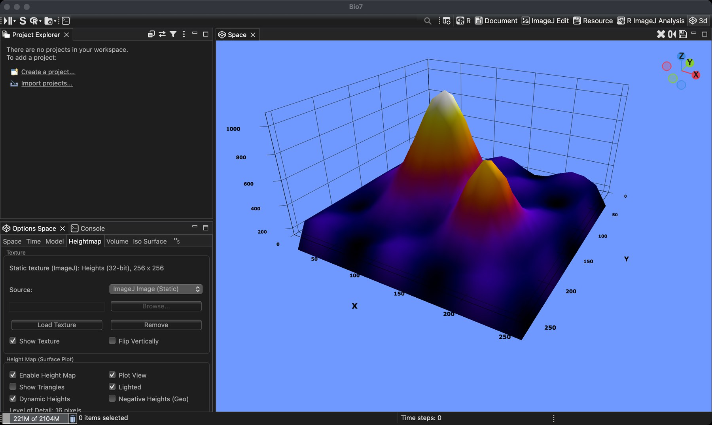
Figure 4.27 A height map of a 32-bit ImageJ image (Fire LUT as texture) in the plot view
Load Stack loads the active ImageJ stack as a volume (with the current LUT and the display range, load again after changes of the stack). LUT Colors uses the colors of the LUT (else gray values). The Mode is Alpha Blending (transparent voxels, see Opacity) or Maximum Intensity (the maximum along the view direction). With a Transfer Function the colors and opacities of the voxels are defined in an editor (Edit..., an opacity curve and a color map). The Opacity, the Threshold and the Sampling (quality) can be adjusted. Z Scale scales the depth of the volume (by default the calibrated voxel depth), larger stacks are reduced to the Max Size. Plot View displays the volume with the axes of the plot API.
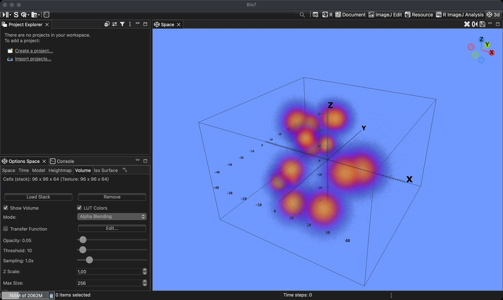
Figure 4.29 The volume rendering of an ImageJ stack (Fire LUT)
Values (Volume and Iso Surface tab) selects the voxels which are loaded: All Values, Threshold of the Image (only the voxels inside of the threshold of ImageJ: set the threshold, then load the stack) or Labels (List) for label images of a segmentation (the labels in the text field, e.g., 1, 5, 10-20, Enter applies). With a selection of values the label of the iso value shows Iso Value: (selected values) and the slider is disabled. The colors of the iso surface (Single Color, Intensity (LUT), Depth (LUT) or Image Colors), Show Surface, Show Volume and Remove are in the Iso Surface tab.
Load Stack loads the active ImageJ stack and computes an iso surface (the default iso value is the threshold, if set, or the center of the display range). The Iso Value, the Smoothing of the data, the Mesh Smoothing and the Opacity can be adjusted. Head Light lights the surface from the viewer, Show Triangles draws the triangles as lines.
The color of the surface is the LUT color at the iso value (LUT Color) or a selected color. With Colors the surface can be colored by the intensity inside of the surface (with a Color Channel of a multichannel stack), by the depth (z) or with the image colors. A Transfer Function and an Opacity Mapping are available, too. Color Depth is the distance inside of the surface where the intensity is sampled. Reduce Display (Max Size) reduces the displayed surface of large stacks (the measurements always use the full resolution).
Export... exports the iso surface with calibrated coordinates: OBJ (with a *.mtl file), STL (3D printing), PLY (with normals and colors), glTF binary (*.glb) or VTK (e.g., for ParaView).
The clipping removes parts of the volume and the iso surface: a Clipping Box (x, y, z ranges) and a Cutting Plane (Azimuth, Elevation, Offset, Flip Side removes the other side). Outline draws the outline of the plane, Slice displays the cross-section of the plane with the data. Cut Iso Surface Mesh (Closed, Export) cuts the mesh with the box and the plane (closed with caps, also for the export).
With the selection of the current ImageJ image the voxels inside or outside can be removed for a range of slices (Remove Inside, Remove Outside). Mask Image... removes the voxels with the value 0 of a binary mask stack. The cuts can be inverted, undone and cleared. With the Mouse tool the plane can be dragged in the 3D view or voxels can be removed with an eraser (Eraser Size) along the view direction. The Mouse modes are Rotate View, Move Plane (Shift: Rotate) and Erase Voxels (Shift: Restore): with Shift the eraser restores the removed voxels.
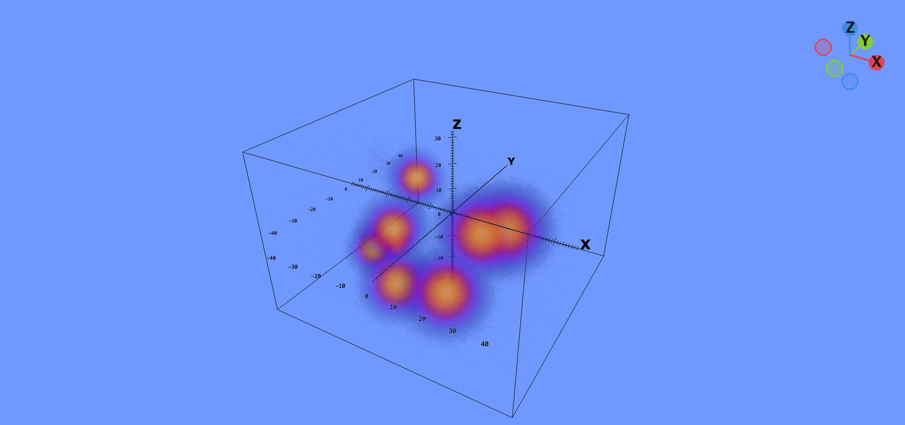
Figure 4.32 A volume (Fire LUT) cut with the clipping box
The Measure tab measures the iso surface and the volume (the figures show the stack Fly Brain of the ImageJ samples, loaded in the tab Iso Surface). The results are displayed in sheets of the Bio7 table: the rows of a sheet and the measurements in the 3D view select each other (a click on a row highlights the measurement, a click on a measurement selects its row). Closing a sheet removes its measurements, Delete Rows or the Delete key in the sheets 3D Points and 3D Areas remove the measurements of the rows.
Min. Object Size, Max. Object Size (Voxels): the objects with fewer voxels (e.g., noise) or more voxels are not measured (0: all sizes).
Measurement Resolution: 1x measures the voxels of the stack, 2x to 4x a finer surface (more precise for small objects, slower).
Decimals of the Tables: the decimals of the values in the sheets (or full precision).
Measure Iso Surface Objects measures the objects of the iso surface (each closed part of the surface is an object): the volume, the surface area, the sphericity, the centroid, the axes of the ellipsoid, the Feret diameter and the holes. The results are in the sheet Iso Objects (with the name of the stack). With Highlight Objects (Colors and Numbers) the objects are colored and numbered like the rows of the sheet. A click on a number in the 3D view or on a row selects the object (the other objects are dimmed).
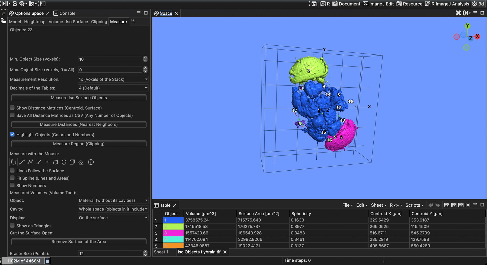
Figure 4.34 The measured objects of the fly brain with their colors and numbers and the sheet Iso Objects
Measure Distances (Nearest Neighbors) measures the nearest neighbor of each object: by the distance of the centroids and by the distance of the surfaces (edge to edge), with the Clark-Evans index. The results are in the sheet Distances. The distance lines are drawn in the 3D view; the line of the selected object is highlighted. Optional: Show Distance Matrices (the matrices of the centroid and the surface distances in the table) and Save All Distance Matrices as CSV (any number of objects).
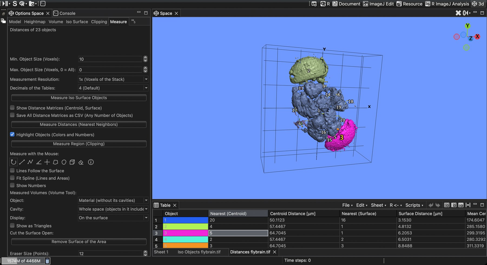
Figure 4.35 The nearest neighbors of the objects (sheet Distances), the selected object 3 is highlighted
Measure Region (Clipping) measures the statistics of the voxels in the region of the clipping (box, plane and cuts, see the Clipping tab) and the volume above the iso value.
Measure with the Mouse: the tools measure directly on the iso surface. The info line at the top of the tab explains the selected tool. Alt (Option) or the space key with a drag rotates the view while a tool is selected, Escape switches the tool off. A click inside a measured area or on a line selects the whole measurement. The tools (from left to right):
Rotate: the mouse rotates the view (no measurement).
Straight line, Segmented line: click the start and the end (or the points of a segmented line, a double-click ends it): the length, straight or along the surface (Lines Follow the Surface). The results are in the sheet 3D Points.
Angle: three points, the second point is the vertex: the angle in 3D.
Point: the position, the value and the object of each point.
Polygon, Freehand: click the corners (a double-click or a click on the first corner closes the polygon) or drag around an area: the perimeter, the polygon area and the surface area (sheet 3D Areas). Fit Spline smooths the lines and areas.
Volume: a click on an object measures its volume, a drag of an outline the volume inside of the outline (the whole depth), see below.
Surface eraser: a drag over the surface removes the visible triangles under the brush (the surface is cut open, e.g., to measure a cavity inside). Undo and Redo with Cmd/Ctrl+Z and Shift+Cmd/Ctrl+Z; Eraser Size sets the size of the brush. Remove Surface of the Area removes the surface inside of a measured area.
Help (i): how to measure with the mouse.
Show Numbers displays the numbers of the measurements in the 3D view (the points underlined, the areas circled, the selected measurement in yellow).
Cut the Surface Open:Remove Surface of the Area removes the surface of the selected area (else of the last polygon, freehand, object or cavity area); measured objects are still measured complete. Eraser Size (Points) sets the size of the eraser (1 to 200 points, default 12). Undo and Redo undo and redo the removals, Restore Surface restores the whole surface (this can be undone, too). The removed surface is kept when the iso surface is computed again (e.g., with another smoothing).
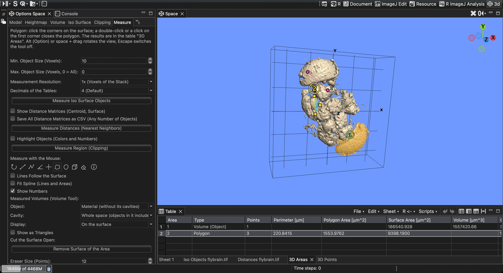
Figure 4.36 Measurements with the mouse: a straight line (sheet 3D Points), a polygon area and a measured volume (sheet 3D Areas) with their numbers
The Volume tool: before the click the closed surface under the mouse is highlighted in the color of what a click measures (orange: an object, blue: the inner wall of a cavity) and the info line describes it. A click measures the volume; only the measured object or cavity is displayed (the other objects are not colored or numbered). The result is a row of the sheet 3D Areas (type Volume (Object) or Volume (Cavity)). A cavity can be measured after the object has been cut open (Surface eraser or clipping). The options of Measured Volumes (Volume Tool):
Object: Material (the volume without its cavities) or Filled (the volume inside of the outer surface, with its cavities).
Cavity: Whole space (the objects in the cavity included) or Free space (without the objects in it, which are shown in red).
Display: the measured volume on the surface, through the surface (visible inside of a closed object) or only the measured volumes; Show as Triangles draws them as a wireframe.
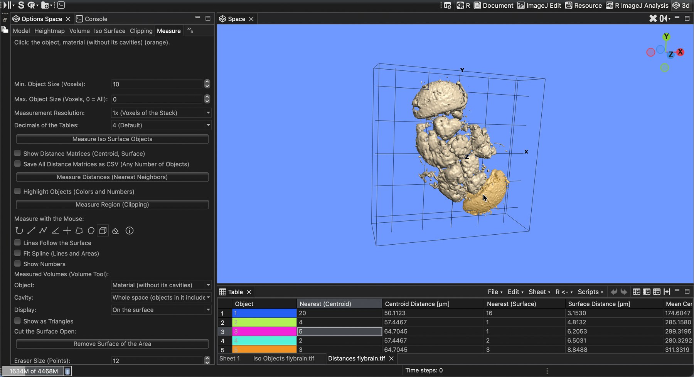
Figure 4.37 The Volume tool: the object under the mouse is highlighted in orange before the click, the info line describes what a click measures
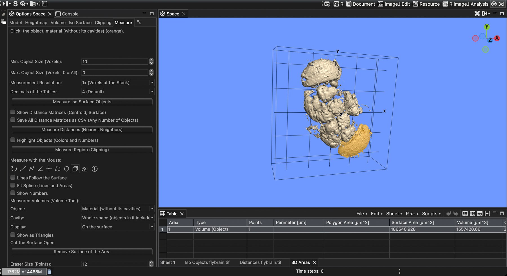
Figure 4.38 The measured volume of the object (sheet 3D Areas); only the measured object is displayed
Clear Points and Areas removes the measurements with the mouse, Clear Measurements all measurements of the 3D view.
The plot API (class Plot3D, package com.eco.bio7.spatial) creates interactive 3D plots in the Space view with a few lines of Java (or Groovy, BeanShell, Python, etc.). A plot contains one or more layers (e.g., a surface and a scatter plot), the title, the axis titles, the legend and a color bar. The plot is displayed with show() which opens the 3d perspective if necessary.
1import com.eco.bio7.spatial.Plot3D;
2import com.eco.bio7.spatial.PlotLegend;
3
4int n = 50;
5double[] x = new double[n], y = new double[n];
6double[][] z = new double[n][n];
7for (int i = 0; i < n; i++) {
8 x[i] = -3 + 6.0 * i / (n - 1);
9 y[i] = x[i];
10}
11for (int i = 0; i < n; i++)
12 for (int j = 0; j < n; j++)
13 z[i][j] = Math.sin(x[i]) * Math.cos(y[j]);
14
15new Plot3D().title("Surface").axisTitles("x", "y", "z")
16 .add(Plot3D.surface(x, y, z).colorMap(PlotLegend.VIRIDIS))
17 .colorBarTitle("z")
18 .show();
Table 4.3 A surface plot with the plot API
The following layers are available as static factory methods of Plot3D:
Method
Plot
scatter(x, y, z)
A scatter plot (spheres, with values for the colors, a layer for each group)
line(x, y, z), filledLine(x, y, z)
Lines and filled lines (ribbons)
surface(x, y, z), wireframe(x, y, z)
A surface or a wireframe of a grid z[x][y]
contour(x, y, z)
Contour lines of a grid
bars(x, y, z)
3D bars (e.g., a 2D histogram)
pie(values, labels)
A pie chart
lineGraph(x, series)
Line graphs of several series
boxplot(groups, names), violin(groups, names)
Box plots and violin plots of groups
histogram(values), histogram(groups, names)
Histograms
area(x, series)
Stacked areas
radar(series, axes)
A radar (spider) chart
rose(values, sectors)
A rose chart (e.g., wind directions)
treemap(values, labels)
A treemap
Table 4.4 The layers of the plot API
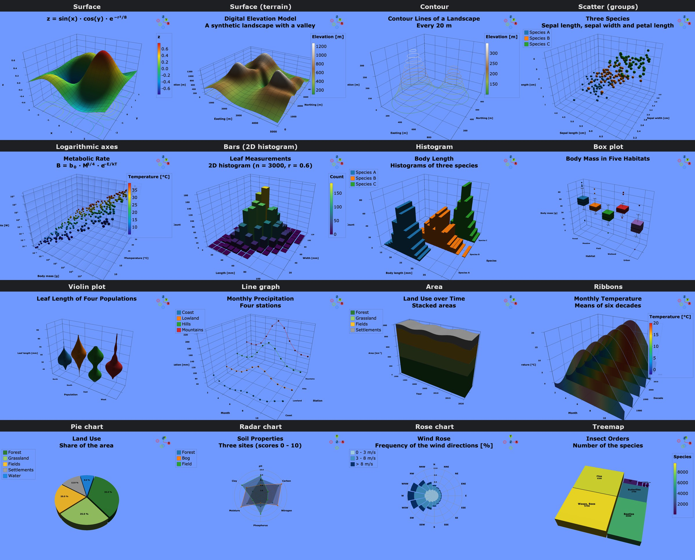
Figure 4.39 Plots of the plot API (examples of the Bio7 Java examples, opengl/plotapi)
The settings of a plot are methods of Plot3D: title, axisTitles, logAxes (logarithmic axes), numberFormats, xRange, yRange, zRange, aspect, categories (category labels of an axis), grids, colorBarTitle, legend, textColors and textColor (the colors of the title, the axis numbers, the axis titles and the legend) and fonts and font (the font families of the texts, the installed families are available with Plot3D.availableFonts()).
1new Plot3D().title("Fonts of a Plot").axisTitles("Length [cm]", "Width [cm]", "Height")
2 .fonts("Georgia", "Courier New", "Times New Roman", "Courier New") // title, numbers, axis titles, legend
3 .textColors(0x202020, 0x404040, 0x202020, 0x202020)
4 .add(Plot3D.surface(x, y, z).colorMap(PlotLegend.VIRIDIS))
5 .show();
A plot can be updated, e.g., in each step of a simulation: the layers are replaced (clearLayers, set, remove, add) and the plot is displayed again with update() (without a reset of the view, the rotation and the zoom are kept). Several examples are available in the folder opengl/plotapi/dynamic of the Bio7 Java examples (e.g., a dynamic scatter plot, histogram, violin plot or rose chart).
1Plot3D plot = new Plot3D().title("Random Walk").xRange(-30, 30).yRange(-30, 30).zRange(-30, 30);
2plot.show();
3for (int t = 0; t < 500; t++) {
4 step(); // the model
5 plot.clearLayers().add(Plot3D.scatter(x, y, z).values(z)).update();
6 Thread.sleep(50);
7}
With the class PlotTable the data of the Bio7 table can be plotted: PlotTable.select(...) opens a dialog to select the columns of the active sheet (or of the selected cells) for the roles of a plot (e.g., X, Y, Z and an optional group). The dialog contains the settings of the plot, too: the title, the axis titles, logarithmic axes, the color map and the export action. Examples are available in the folder opengl/plotapi/table (the demo data are created with TableDemoData).
1PlotTable.Selection s = PlotTable.select("3D Scatter Plot", "Select the columns", "X", "Y", "Z", "Group?");
2if (s != null) {
3 // The title, the axis titles, the log axes and the export action of the dialog
4 s.apply(new Plot3D())
5 .add(Plot3D.scatter(s.numbers(0), s.numbers(1), s.numbers(2)).label(s.name(2)))
6 .show();
7}
Table 4.7 A scatter plot of the Bio7 table (see TableScatterPlot for a layer of each group)
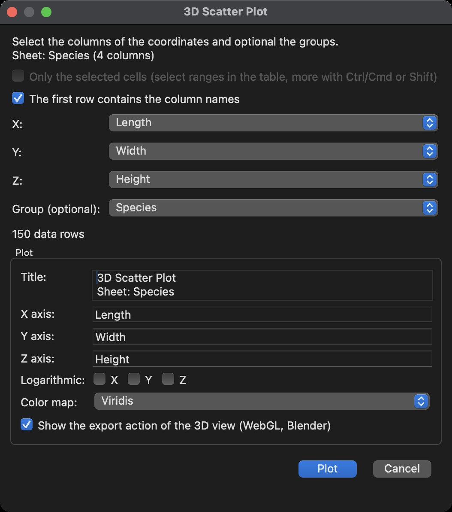
Figure 4.40 The dialog of the table plot
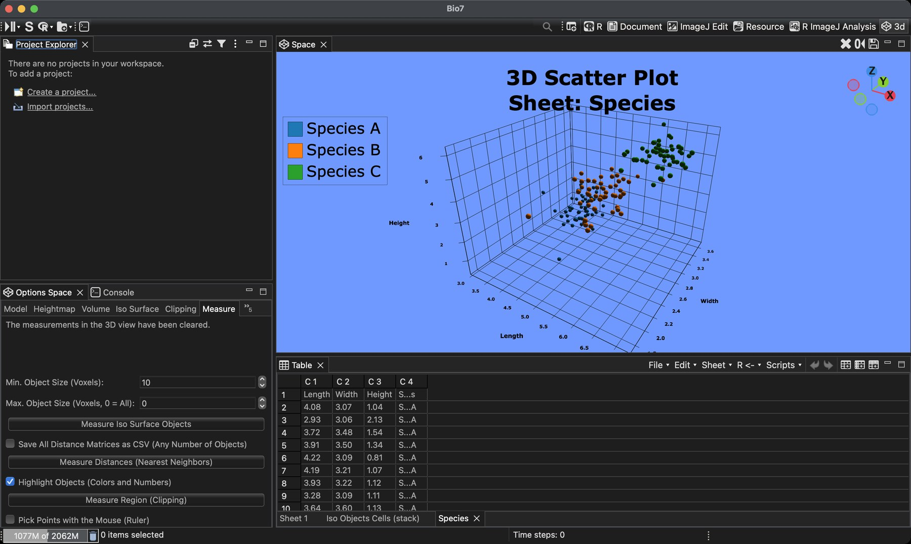
Figure 4.41 A scatter plot of the Bio7 table with groups
A plot can be exported to an interactive web page (exportHtml, a single HTML file with WebGL, the plot can be rotated and zoomed in any web browser), to a glTF file (exportGltf, *.glb) and for Blender (exportBlender, a *.glb file and a Python script which imports the plot with the texts, a camera and lights in a new scene: in Blender Scripting - Open - Run Script). With exportAction(true) the export action is displayed in the toolbar of the Space view (Export Plot (WebGL, Blender)).
1Plot3D plot = new Plot3D().title("Digital Elevation Model")
2 .add(Plot3D.surface(x, y, z).colorMap(PlotLegend.TERRAIN));
3plot.exportHtml("/path/terrain.html");
4plot.exportBlender("/path/terrain.glb"); // writes terrain.glb and terrain.py
Table 4.8 The export of a plot
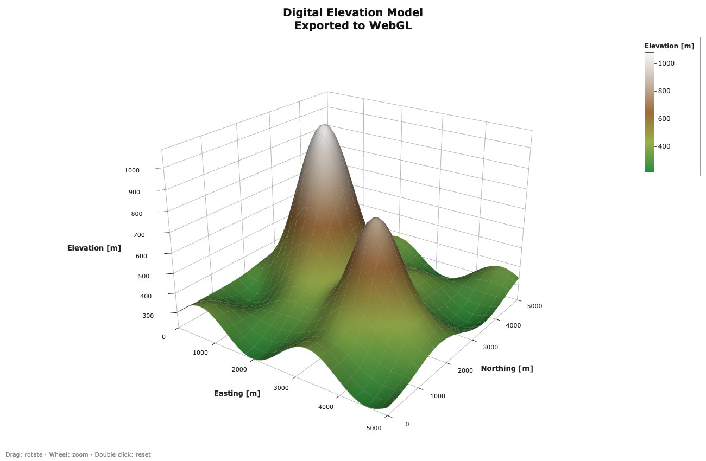
Figure 4.42 An exported plot in a web browser (WebGL)
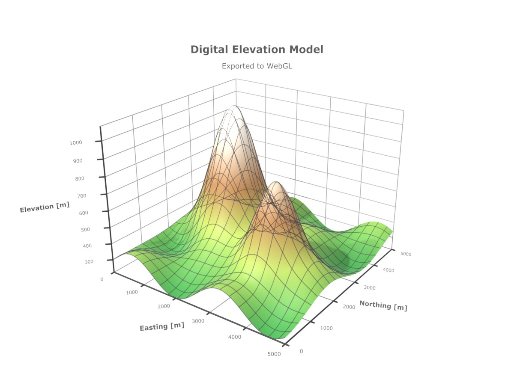
Figure 4.43 The same plot rendered in Blender
The Blender script uses the fonts of the plot (the font files of the system) and sets the output folder of a rendered animation next to the *.glb file.
With the class PlotRecorder a dynamic plot can be recorded frame by frame and exported to an HTML page with a player (Play/Pause, a timeline, the speed and a loop) or for Blender as an animation (the visibility of the objects is animated in the timeline of Blender, e.g., to render a film).
1PlotRecorder recorder = new PlotRecorder().speed(10);
2for (int t = 0; t < 100; t++) {
3 step(); // the model
4 plot.clearLayers().add(Plot3D.scatter(x, y, z)).update();
5 recorder.frame(plot);
6}
7recorder.export("/path/recording.html");
8recorder.exportBlender("/path/recording.glb");
Table 4.9 The recording of a dynamic plot
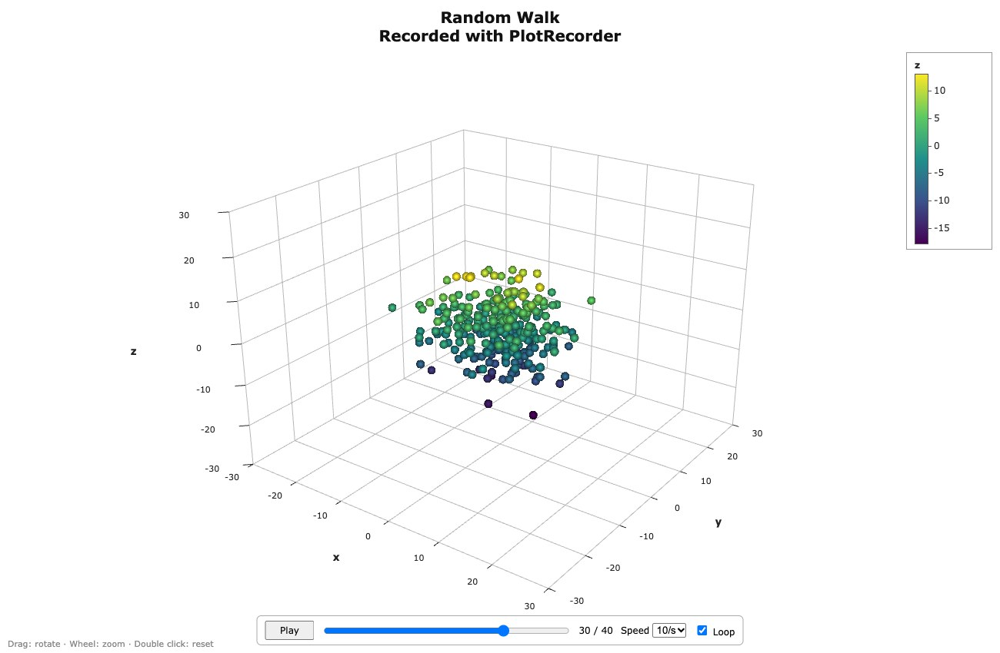
Figure 4.44 A recorded plot with the player in a web browser
The class HtmlSimulation exports an interactive simulation to a single HTML page (without dependencies, WebGL for 3D). The simulation runs in the web browser: the model is written in JavaScript with the functions setup(sim) (called at the start and with Reset) and step(sim) (one time step). The page contains Play/Pause, Step, Reset, the speed, the controls of the settings (sliders, number fields, text fields, check boxes, choices and buttons) and an optional chart of values over time. The settings are available in the model as sim.p.name.
The view of a simulation is a 2D grid (View.GRID_2D, e.g., a cellular automaton with optional agents), a 3D scene (View.SCENE_3D, points and lines, e.g., a swarm) or a dynamic surface (View.SURFACE_3D, e.g., a diffusion).
1new HtmlSimulation("Game of Life")
2 .view(HtmlSimulation.View.GRID_2D)
3 .number("size", "Grid size (cells)", 120)
4 .slider("density", "Start density", 0, 1, 0.01, 0.3)
5 .restartOn("size", "density")
6 .chart("Population")
7 .scriptFile("/path/GameOfLife.js") // the model in a JavaScript file
8 .export("/path/GameOfLife.html");
Table 4.10 An HTML simulation with the model in a JavaScript file
The model can be embedded as a string (code) or loaded from a JavaScript file (scriptFile) which can be edited in an editor of Bio7 (e.g., the generic editor). The export copies the script file next to the page or merges it into one HTML file (embedScript(true)). A template of a script file is created with HtmlSimulation.writeScriptTemplate(file). Several examples are available in the folder html of the Bio7 Java examples (e.g., the Game of Life, an epidemic model, a forest fire, a swarm, a heat diffusion, a reaction-diffusion model and foraging ants).
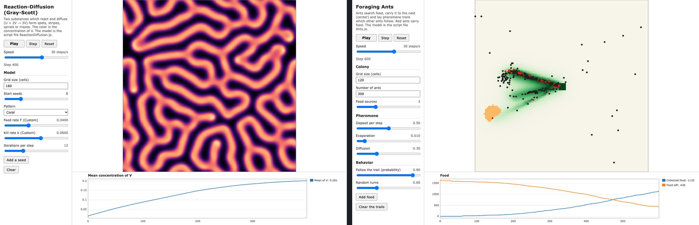
Figure 4.45 Two HTML simulations with the model in a JavaScript file: a reaction-diffusion model (Gray-Scott) and foraging ants
The Space view can be displayed in the fullscreen mode with the keys F2 (the primary monitor), F3 (the secondary monitor), F4 (the tertiary monitor) and F5 (a selected monitor). The fullscreen mode is quit with the Escape key (or F2). The switch to the fullscreen mode creates a new OpenGL context and invokes the setup method again, so textures, TextRenderer objects and models of custom code should be created in the setup method.
The WorldWind perspective can be opened in the perspective bar (WorldWind). It embeds the WorldWind view with the virtual globe of NASA WorldWind Java (https://worldwind.arc.nasa.gov/java/) and the Options WorldWind view with the settings of the globe in several tabs (Control, Default Layers, Layers, Render, Measure and Projection). The globe displays satellite images, maps, elevations, boundaries and place names and in addition own data: ImageJ images, GeoTIFF images, shapefiles and custom OpenGL layers (Java).
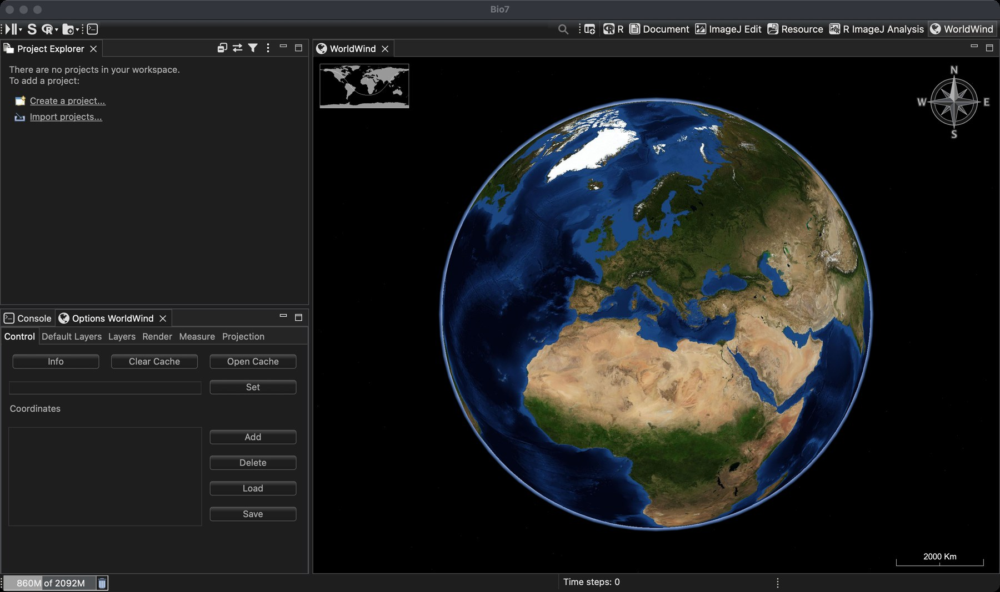
Figure 4.46 The WorldWind perspective (dark theme)
The overlays of the globe (the compass, the scale bar, the world map, the view controls, the graticules, the place names, the boundaries and the measure tool) are scaled for high DPI displays (e.g., a Retina display). The compass is drawn with the colors of the active Bio7 theme.
In the text field of the Control tab coordinates (latitude, longitude) can be entered to fly to a location (Set). The coordinates of the current view can be stored in the list of locations (Add) and visited again with a double-click on a list entry, e.g., for a presentation in the fullscreen mode. Selected locations can be deleted (Delete), the list can be saved and loaded as a *.txt file (Save, Load). Clear Cache deletes the downloaded images and elevations (the tiles of the layers), Open Cache opens the location of the cache.
The Default Layers tab enables and disables the layers of the globe and blends them with an opacity (the sliders). Some layers are enabled by default, other layers can be enabled when needed:
Stars, Atmosphere and the NASA Blue Marble Image (included in WorldWind, also available offline).
Blue Marble (WMS) 2004 (NASA GIBS) and Sentinel-2 cloudless 2016 (EOX, Copernicus Sentinel data): satellite images of the earth.
Bing Imagery, USGS NAIP Plus and USGS Urban Area Ortho: high resolution aerial images (partly only for the USA).
OpenStreetMap: the standard map of OpenStreetMap as sharp tiles (also on high DPI displays), see the figure below.
Political Boundaries and Place Names: the boundaries of the countries and the populated places of Natural Earth (public domain, bundled with Bio7, drawn as vectors and text). More place names are displayed when the view is closer.
View Controls, Lat-Lon Graticule, MGRS Graticule, World Map, Scale bar and Compass.
The data of the layers have to be cited, e.g., if a screenshot of the globe is published. Sources and Licenses... opens a dialog with the sources, the licenses and the links of the enabled layers (the source of a layer is shown as the tooltip of the layer, too).
Figure 4.49 The political boundaries and the place names of Natural Earth over the satellite images
With the Layers tab own data can be displayed on the globe: GeoTIFF images (Add GeoTIFF), shapefiles (Add Shapefile), the active ImageJ image as a static layer (IJ image) or as a dynamic layer which is updated with the image (IJ Dynamic, e.g., an animated stack) and a custom OpenGL layer of compiled Java code (Dyn. Layer). An added layer gets its own panel with the controls of the layer (e.g., the opacity and the removal of the layer).
The Latitude and Longitude fields define the area of an image on the globe (the minimum and maximum), Go to flies to the area. Get Area fills the fields with the values of special variables in R (e.g., an area which is georeferenced in R), with Compute the corners of an area can be picked on the globe (alternately the minimum and the maximum, disable the toggle after the selection). Image Alpha makes a color of an image transparent. So, e.g., an R plot (ImageJ is the default plot device of R in Bio7) can be positioned on the globe.
Capture renders the globe to an ImageJ stack (the number of Frames and the frame rate FPS can be adjusted), e.g., to save an animation of a flight over the globe. Screenshot transfers the current view as an image to ImageJ. Info shows a short help for the two actions.
In the Measure tab distances, areas and shapes can be measured on the globe. Before a measurement the Shape (a line, a path, a polygon, a circle, an ellipse, a square or a rectangle), the Path type, the Units and the Angle Format can be selected. Follow terrain includes the heights of the terrain, the Control points, the Rubber band, a Free Hand selection and the Tooltip can be enabled. A measurement is started with New Measur., edited with Edit and stopped with End. The colors of the line, the points and the tooltip can be changed. The results (length, area, width, height, heading and center) are displayed in the table and can be transferred to R (Values->R).
Bio7 embeds R for the statistical analysis of data, images and models: R runs embedded in the process of Bio7 (R 4.3 or later, see 2.1.3↑). Start R in the main toolbar or in the R menu starts R in the Bio7 console. R can then be used in the R-Shell view, the R editor, the Markdown editor, the Table view, the ImageJ views and with the scripts and the compiler of Bio7. The path to R, the R startup commands and the other settings are in the R preferences (see 4.6.3.13↓).
Start R: Starts the embedded R (the menu of the toolbar action Start R contains Start R and Interrupt R). R can’t be restarted without a restart of Bio7.
Interrupt R: Interrupts the evaluation (embedded R: Terminate and Kill are not available, R runs in the process of Bio7).
Load Workspace, Save Workspace: Loads or saves an R workspace (*.RData).
Evaluate Expression: Opens a dialog to evaluate an R expression, the result is displayed in the console.
Evaluate Line or Selection: Evaluates the selected text or the current line of the R editor and moves to the next line. A line is only evaluated if the expression is complete, else it is collected until the expression is complete (interrupt with the action of the R-Shell view).
Evaluate Clipboard: Evaluates the R script in the clipboard.
Get Clipboard Data: Transfers the data of the clipboard (e.g., cells of a spreadsheet) to the R workspace as the dataframe clip.
Remove All Objects: Removes all objects of the current workspace.
Start RGui with Workspace: Windows: starts RGui with the current workspace.
The plots of R are displayed in Bio7 with the device selected in the R plot preferences (Preferences R > Plot, Use Custom Device):
SWT Vector Plot (embedded R, default): each plot device is a view (R Plot [n], R icon) with vector graphics. The plot is drawn again in the size of the view when the view is resized. The view opens next to the ImageJ-Canvas view and comes to the current perspective with a new plot.
ImageJ Plot Canvas (embedded R): the plots are displayed in the ImageJ plot canvas (resizable, HiDPI, locator(), save and copy as an image).
ImageJ View Display Size, ImageJ Image: the plots are created as images in the size of the ImageJ-Canvas view (or of variables in R) and opened as images in ImageJ.
Image, PDF, SVG, PostScript: file devices.
Plot history (R plot preferences) sets the number of recorded plots of a device (0: no history), which can be browsed in the plot views.
The R perspective contains the views for the work with R: the R-Shell view (expressions and the objects of the workspace), the Packages view, the Database view and the Project Explorer at the top left, the Console (R), the Plot view and the R Snippets at the bottom left, the editor area (e.g., the R editor), the Table view and the Snippets view below and the Outline at the right.
Figure 4.57 The R perspective (dark theme): the R-Shell view with the objects of the workspace, an R script in the editor, the Outline view, the console and an R plot in the R Plot view
The Table view is a spreadsheet in which data can be imported, exported, edited and transferred to and from R and Python. Several sheets can be opened side by side (the tabs at the bottom of the view). The columns are titled A, B, C ... (like in LibreOffice), the rows are numbered. A selection (also several ranges with Ctrl/Cmd or Shift) is highlighted with the accent color of the theme; a click on a column or row header selects the whole column or row. Every sheet has its own undo and redo history.
Figure 4.58 The Table view with the iris data in the sheet iris, a selection of numeric cells and the menus of the view (File, Edit, Sheet, R <-, Python <-, Scripts) followed by Undo, Redo, Add Sheet, Add Column, Add Row and Fit Column Widths
The toolbar of the view contains six menus and some actions. The menus:
File (import and export of the sheets):
Import CSV: imports a CSV or text file with the import dialog (separator, quotes, decimal sign, encoding, see the next section).
Import Excel (97-2003), Import Excel (2007-2013 XML) and Import LibreOffice (ODS): import a spreadsheet file (*.xls, *.xlsx, *.ods).
Load Bio7 XML: loads a sheet stored in the Bio7 format (with the formatting: colors, fonts, images).
Export as Excel (97-2003), Export as Excel (2007-2013 XML), Export as LibreOffice (ODS) and Export as Text: export the active sheet.
Save as Bio7 XML: saves the sheet with its formatting (colors, fonts, images).
Edit (the selected cells):
Cut, Copy, Paste and Delete (Ctrl/Cmd+C, Ctrl/Cmd+V, Del): edit the selected cells.
Copy Image To Clipboard and Paste Image From Clipboard: copy the image of a cell or paste an image (e.g., a plot or a part of an image of ImageJ) into the selected cell.
Background Colour, Gridline Colour and Font: the background color and the font of the selected cells and the color of the grid lines.
Resize Selected Cells: the width and the height of the selected columns and rows.
Sheet (the structure of the sheet):
Add Sheet adds a sheet, Add Sized Sheet a sheet with a given number of columns and rows.
Rename Sheet renames the active sheet (or a double-click on the tab).
Add Column (Before), Add Column (After), Add Row (Before) and Add Row (After) insert columns or rows next to the selection.
Delete Columns and Delete Rows remove the selected columns or rows.
R <- (transfers the data to the R workspace; R must be running):
R<-Table: the whole sheet as a data frame, R<- Table+head with the first row as the column names.
R<-Selection(numeric), R<-Selection(factor) and R<-Selection(character): the selected cells as a vector of the type.
R<-Selection as Matrix: the selection as a numeric matrix.
R<-Selection as Data Frame (also +head), R<-Selection Columns as List and R<-Selection Rows as List (also +head): the selection as a data frame or as a list of the columns or the rows.
R<-Selection Columns as Variables (also +head): each selected column as a single variable (with the head: named after the first row).
A name for the created R object is asked in a dialog. The transfer from R to the table is done in the R-Shell view (Transfer to Table in the context menu of the objects).
Python <- (transfers the data to the embedded Python; the same structure as R <-):
Python<-Table and Python<-Table+head: the sheet as a pandas DataFrame (without or with the column names of the first row).
Python<-Selection(numeric), Python<-Selection(character) and Python<-Selection(categorical): the selected cells as a numpy array of numbers (text and empty cells become NaN), as a list of strings or as a pandas Categorical (a factor).
Python<-Selection as Array: the selection as a numpy array.
Python<-Selection as DataFrame (also +head), Python<-Selection Columns as Dict and Python<-Selection Rows as Dict (also +head): the selection as a DataFrame or as a dict of the columns or the rows.
Python<-Selection Columns as Variables (also +head): each selected column as a single variable.
Data frames and arrays of Python are transferred to the table with Transfer to Table in the context menu of the Python-Shell view.
Scripts: the scripts of the folder of the Table menu scripts (R, Python, Groovy, BeanShell, JavaScript, Java or ImageJ macros, see 10.3↓), e.g., to compute new columns from the selected data. Subfolders are displayed as submenus.
The actions of the toolbar after the menus:
Undo and Redo (also Cmd/Ctrl+Z, Shift+Cmd/Ctrl+Z): undo and redo the changes of the active sheet (each sheet has its own history).
Add Sheet (Add Spread), Add Column and Add Row: add a sheet, a column or a row.
Fit Column Widths: fits the widths of the columns to their content (the complete numbers and texts); press it again for the widths before.
Figure 4.59 The context menu of the cells of the Table view
The context menu of the cells contains Cut, Copy, Paste, Copy Image To Clipboard, Paste Image from Clipboard, Delete Contents, Delete Rows and Delete Columns.
The data of a sheet can also be plotted in the 3D view with the plot API (a dialog selects the columns, see 4.4.3↑).
File > Import CSV of the Table view opens the CSV Reader. A file (File) or the text of the clipboard (From clipboard) is imported with the options of the dialog; the preview shows the result of the options immediately and a message shows problems (e.g., a missing separator):
Separator character: comma, semicolon, tab or another character. Detect finds the separator (comma, semicolon, tab or pipe) from the first lines.
Quote character, Escape character and Comment character (lines starting with this character are skipped).
Start at line and the Encoding of the file.
Strict Quotes, Ignore Quotations, Ignore Leading WS (leading whitespace), Trim Values, Keep CR (carriage returns), Skip Empty Rows and Column Titles (the first row contains the names of the columns).
The R-Shell view contains an expression field, the actions of the expressions, the list of the objects of the R workspace and the description of a selected object.
Figure 4.61 The R-Shell view (maximized) with the objects of the workspace (the data frame iris is selected and described at the right)
The Expression Field
In the expression field R expressions are parsed and evaluated (Enter). Parse errors are indicated, the code completion opens with Ctrl+Space and the history of the expressions opens with the Arrow Up key (a click transfers an expression to the field). The actions below the field:
Eval: Evaluates the expression (several expressions are separated with a semicolon).
Load, Save: Imports data to R or loads the history, exports R data or saves the history (up to 100 expressions).
R Doc: Opens the documentation of R.
?: Opens the help of the keyword in the field (a function, a package, etc.).
Interrupt: The last button interrupts the R execution.
Keys (macOS: Cmd instead of Ctrl)
Function
Ctrl+Space
Code completion
Arrow Up
The history of the expressions
Ctrl+Enter
Writes the expression into the R editor (or R Markdown editor) with a line break
Alt+Shift+- (macOS: Cmd+Alt+Shift+B)
Inserts the assignment <-
Alt+Shift+N (macOS: Cmd+Alt+Shift+N)
Inserts the pipe %>%
Ctrl+Alt+Shift+O, Ctrl+Alt+Shift+S
Inserts the code to open or save a file (selected in a dialog)
Ctrl+Alt+Shift+I
Writes the history into the R editor
Ctrl+Alt+Shift+R
Reloads the code completion (e.g., after a package has been loaded)
Table 4.12 The keys of the expression field
The Objects of the Workspace
The list shows the objects of the R workspace. A selected object is described in the panel at the right (type, class and size). The actions:
List: Updates the list of the objects (ls()).
Del: Removes the selected objects (several with Ctrl/Cmd or Shift).
Gc: Starts the garbage collection of R.
Clear: Clears the description panel.
Font: Changes the font of the list and the description.
?: Shows the help of the actions.
The key A transfers the selected object names to the expression field separated by commas, the key C separated by plus characters (e.g., for a formula).
Context Menu of the Objects
Figure 4.62 The context menu of the objects of the R-Shell view (the data frame iris is selected); the submenus at the end are the scripts of the R-Shell scripts folder
Show, Summary: Prints the values or the summary of the selected object in the console.
Filter: Shows only the objects of a kind: Dataframes, Matrices, Vectors, Functions or Factor.
Convert: Converts the selected object To Dataframe, To Matrix, To List of Objects, To Vector, To Numeric, To Factor or To Character.
Plot: Plots the selected objects (several together): line, area, scatter, histogram, density, ECDF, boxplot, violin, strip, barplot, pie, scatter matrix, correlation matrix, heatmap, contour, 3D surface, Q-Q plot or image. Plot with Options... opens the Plot Options view (see 4.6.3.6↓).
To Python: Transfers the selected object to the embedded Python (with the same name).
Transfer to Table: Transfers the object to the Table view: Dataframe with Head (a new sheet with the names in the first row), Dataframe, Matrix, Vector to Rows and Vector to Columns (from the selected cell of the active sheet).
LibreOffice: Opens a LibreOffice spreadsheet and transfers data between R and LibreOffice (see 9.5↓).
Scripts: The R, Python, Groovy, BeanShell, JavaScript and Java scripts of the R-Shell scripts folder are listed at the end of the menu (subfolders as submenus, e.g., Classification, General, Examples, Packages, GIS); they work with the selected objects (see 10.3↓).
The R Snippets view offers templates in thematic tabs (Variables, Data, Math, Statistics, Image, Matrix, Spatial Statistics, ...). A selected template shows its description. A double-click transfers the template to the expression field of the R-Shell view, a double-click with the right mouse button transfers it to an opened R editor.
The packages view consists of three tabs to install, load and manage R packages. In the Install Packages tab a package list can be loaded from the default R mirror (see 4.6.3.13↓) with the Load Packages list action and installed with the Install Selected action. The output of the installation is displayed in the console. To find the right R package some search facilities are available to find the package in the package list and to get some information about the package (select the Open Package Description option). With the Update Installed Packages action all currently installed R packages will be updated if possible.
Figure 4.64 The Install Packages tab
The Load Packages tab
The Load Packages tab displays the currently installed R packages and their version numbers. This list can be refreshed with the Refresh Packages List action (a refresh of the list also occurs when the tab is switched!). A double-click on the list with the mouse loads the selected package which in turn also reloads the package code completion list for the R-Shell and the R editor. With the Remove Selected Package action a R package can be removed. With the Add selected to R editor action selected libraries can be added to an opened R editor as text (library(xxx)). With the Update selected Package action selected packages can be updated if an update is available. With the option Open Package Description a browser will be opened to display the current selected package information.
Figure 4.65 The Load Packages tab
The Attached Packages tab
The Attached Packages tab displays the current loaded R packages. With the RefreshPackages List action this list can be updated (a refresh of the list also occurs when the tab is switched!). A context menu is available with an Detach action to detach a selected package and a Refresh packages list action.
The objects of the R workspace can be plotted directly from the R-Shell view: select one or several objects and choose a plot type in the Plot menu of the context menu (the plots use the default plot device, by default the R Plot view). Plot with Options... opens the Plot Options (R) view: the variables of the workspace are selected for Y, X, Group and Z, the plot type, the style, the palette, the texts, the axes, the legend, the lines, the points and the bars are adjusted and Plot draws the plot. Copy Source and Open in Editor reuse the R code of the plot in a script. The Plot Options view is the same for R and Python (see 4.7↓).
Figure 4.67 The R editor with the opened context menu
The R editor of Bio7 supports the syntax of the R language. If an R file is created with the default wizard the extension of the created R script file is *r. If you have an *.r file outside the workbench, this file can simply be dropped to a project of Bio7. If a R file has been opened, the toolbar of the Bio7 application displays a new action item for the interpretation of R scripts (if R is running).
R editor parser
The R editor of Bio7 is connected to an R parser. Each time the R code in the editor is changed the editor file is parsed and error or warning markers are created - visible as icons in the vertical ruler and underlined in the text where the errors or warnings have been detected. In addition the R parser creates code analytics to detect and inform about several flaws in the code. If some code assistence is available a light bulb will be displayed in the vertical ruler of the editor. A click on the quick fix icon opens a code suggestion which can be applied with a mouse click. The error and warning messages can also also opened if the underlined marked word is hovered. Hovered quick fixes can be confirmed with a mouse click, too.
Figure 4.68 The R editor with errors and warnings. Error and warning quick fixes are indicated with a light bulb icon. Quick fixes can be opened (and applied) when hovering over the underlined error or warning.
The database view contains three tabs to configure a database connection. For a database connection the ODBC drivers have to be installed for the dedicated Operating System. The R packages odbc and DBI have to be installed, too. In the first tab Connection some templates are available which can be selected to be used for a custom connection and displays the connection information of the Database and SSH Tunnel tab.
To start with a custom connection:
Install the ODBC drivers and R packages (odbc, DBI)
Select one available default profile
Update the login data on the Database and (if enabled) SSH Tunnel tab. In additon customize the Custom Disconnect Code for a live connection. Please note if no database password should be stored for the database connection leave the password field blank. For each live database connection a password dialog will be opened to ask for the username and password (handy if you don’t want to store the database password or the password should be hidden in a public area)
Store the current profile with the Add Connection Profile action
Use the Connect action to establish a database connection
Use the Disconnect action to execute the R code given in the Custom Disconnect Code textfield
In the following section the different tabs and settings are described in detail.
The Connection Tab Settings
The Add Connection Profile action stores the current settings of the Database and SSH (if enabled) entries in a new profile and adds the selected name to the list of available Stored Profiles (saved as a XML file in Bio7).
The Delete Stored Profile action deletes the current selected profile and removes the profile from the Stored Profiles list.
The Use SSH Tunnel option adds the settings of the SSH Tunnel tab to the database tab settings which will be previewed in the Preview textfield.
The Preview textfield shows the current settings of the database and SSH connection which can be stored as a database profile.
The Insert in Editor action transfers the database connection code to the current opened editor.
The Connect action establish a connection with the credentials given from the Database and SSH Tunnel tab. The connection is stored in the variable con
The Disconnect action executes R code given in the textfield Custom Disconnect Code (available to control the SSH connection!)
Figure 4.69 The Connection tab
The Database Tab Settings
The List ODBC Drivers action searches for available ODBC drivers on the OS and add them to the ODBC Driver list
The ODBC Driver list let you select a ODBC driver for a database connection by name found by theaction List ODBC Drivers
The Server textfield to enter the server address of the database
The Database textfield to enter the database name of the connection
The Port to enter the port of the database
The User textfield to enter the username.If empty a login dialog will automatically be opened for the username and password
The Password textfield to enter the password of the database connection. If empty a login dialog will automatically be opened to enter the username and password
Figure 4.70 The Database tab
The SSH Tunnel Tab Settings
The SSH Host textfield and Port spinner for the server address and port of the SSH connection
The Username of the SSH connection (password should be stored in the SSH key!)
The Sleep spinner to execute the sleep command on the remote server (default to 10s)
The Private Key file textfield and file dialog action to set the location of the private SSH key
The Local Port to set the port for port forwarding (This setting lets you specify a local port that will be forwarded to your remote host and remote port)
The Custom arguments textfield to change or add custom SSH client options
Plots can also be displayed with ImageJ as the R plot device (ImageJ Plot Canvas or ImageJ images): multiple plots are displayed in an ImageJ stack (with the slider one plot of the stack is selected). Plots and plot stacks can be saved as images and movies with ImageJ in different formats (e.g., stacks as *.avi or animated *.gif). The size of the plots and the format are set in the R plot preferences (see 4.6.3.11↓).
Figure 4.72 A R Plot opened in ImageJ as the default device
Bio7 has a debugger for R scripts, functions, class methods and the R chunks of R Markdown and Quarto documents: breakpoints are set in the R editor, the debugger stops in the editor and the Debug view shows the variables, the watch expressions and the call stack. The debugger is described in 5.1.3.1↓.
Figure 4.73 R plot preferences to select and adjust the R plot device
In the preferences several options are available to adjust the R plots. The default plot size can be changed in the textfield Device Definition (or the whole plot definition). Beside the option to plot images in ImageJ it is possible to open plots in different applications. Some templates in the preferences can be selected to switch e.g. to a *.pdf (multiple plots can be displayed) or *.svg plot (displaying a single plot) which will be opened with the default registered software if available – for *.svg i recommend http://www.inkscape.org to improve the plot appearance). Antialiased image plots can be enabled with the Image Cairo option. To change the default Device Definition in the textfield press the action Apply. With the Special image plot options plots can be opened in individual image tabs or macros can be excuted after image creation (handy if you automatically want to scale images after plot creation). Please note that the preferences will be saved if you press the OK or Apply button.
Special Plot Function
RGL (a special package for 3D plots) and some native windows need a GUI thread which is not available. To trigger a repaint with Bio7 please select the Bio7 window and press the key combination ALT+A. This is not necessary if you simply switch to the R native mode!
As noted earlier if a command has been typed in the textfield of the R-Shell view and the ? button has been pressed the action tries to open the default help page for the command in the Bio7 browser (same as typing ?+command in R).
The preferences of R are in Preferences Bio7 > Preferences R (and the pages Preferences R Plots, Preferences R Build Tools and Preferences R Debug). The page shows the restrictions of embedded R (see 2.1.3↑). The preferences:
Path to R: the R installation which is embedded. R Setup... (Find or install R) searches the installed R versions (Search Again, Use for Bio7) and helps to install R.
Package install location: the folder where new R packages are installed.
Path to temporary R folder: the folder for temporary files of R (e.g., plot images).
R startup commands: R commands which are executed at each start of R (e.g., to set paths or options).
Package Server (Select Server): the CRAN mirror for the installation of packages.
Transfer with "format" to table and Digits: the formatting of the numbers which are transferred from R to the Bio7 table (see the R function format).
R-Shell:Update R Workspace Objects after evaluation, Display output/error stream of console and the options of the code completion of the R-Shell view (activation characters, key combination, size of the popup).
Options for the source command: the arguments of source() when an R script is executed.
Execute R command on shutdown: an R command which is executed when Bio7 is closed.
Preferences R Build Tools contains, e.g., the port of Shiny apps (Shiny port), Preferences R Debug the port of the debugger.
The R of the Bio7 console is the embedded R (Native R in the interpreter menu of the Console view): R commands can be typed directly into the console, the output of R and of the scripts is displayed there. Ctrl+C in the console interrupts a computation. The R editor, the R-Shell view and the console use the same R workspace.
If R files are selected in the Project Explorer an action is available which opens a dialog to create a R package skeleton from files or selected R workspace variables. After the creation if the created R package folder is selected several available actions help in the build process of a package.
Build PDF From .Rd to create PDF documentation of *.Rd files.
Check R Package - To check if the package is properly configured.
Build R Package - to start the build process of the package
Install R Package - to install the R package.
Figure 4.75 Dialog to create R package skeleton
4.6.3.17 Create R Packages with the devtools package.
Since Bio7 2.5 a new way of creating packages have been added to the context menu of the Project Explorer by using the devtools library (https://github.com/hadley/devtools) to create, test, compile and distribute a new R package. To setup a new R package create a project folder in the workspace of Bio7 and then select the folder and execute the “setup” action in the context menu of the Project Explorer. Documentation will be created if roxygen comments have been added to the R scripts by executing the “Document” action.
Setup - Setup R package in (project) folder (devtools)
Load All - Simulates installing and reloading (devtools)
Document - Updates the documentation, etc. (devtools)
Test - Tests the packages (devtools)
Install - Installs the packages
Build - Builds the packages
Check - Checks the packages
Build Windows - Builds the package on Windows
Run Examples - Runs all examples of the package
Check Manuals - Checks all manuals
Release - Releases the package
For some of the listed actions above the OS pseudo terminal in the console view has to be activated or will be activated. Custom flags can be added in the R Preferences Built Tools of Bio7. Please note: For the built process of R package binaries some extra tools are needed (especially for Windows). Please consult the R instructions (http://cran.r-project.org/doc/manuals/R-exts.html) on the internet or search for available tutorials. For tests on the Windows OS I installed a Latex environment (MiKe\SpecialChar TeX with inconsolata.sty style file installed) and the Rtools distribution for Windows (http://cran.r-project.org/bin/windows/Rtools/).
Bio7 embeds Python (CPython) like R: Python runs in the process of Bio7 (embedded Python), so data, images and plots are transferred directly between Python, R, ImageJ and the Bio7 table. The installation and the preferences of Python are described in 2.1.5↑. Python is started with Start Python in the main toolbar (or automatically with the first Python action).
Figure 4.76 The Python perspective (dark theme): the Python-Shell view with the objects of the workspace (left), a Python script in the editor (center), a matplotlib figure in the Python Plot view, the console and the Outline view (right).
The Python perspective arranges the Python tools around the editor area:
Left top: the Python-Shell, Python Packages and Project Explorer views.
Left bottom: the Console view (the output of Python).
Center: the editor area with the Python editor (see 5.1.10↓).
Below the editor: the Table view, the Python Plot view and the Snippets view.
Right: the Outline view of the opened Python script.
The Python Debug perspective is opened automatically when the debugging of a Python script starts (see 5.1.10.1↓): the Project Explorer and the Python-Shell view (left top), the Python Debug view (left bottom), the editor, the Console, the Table and the Python Plot view below the editor and the Outline view.
Figure 4.77 The Python-Shell view (maximized) with the objects of the Python workspace (a selected object is described at the right, see the context menu below)
The Python-Shell view is the interactive interface to the embedded Python. Python expressions are typed in the input field at the top: Enter evaluates the line, Up and Down browse the history and the code completion (key combination of the preferences) proposes the names of the modules and of the variables of the running Python.
The buttons of the view:
Eval: Evaluates the expression of the input field.
Load: Imports a file into the workspace (*.npy, *.npz, *.csv, *.tsv, *.xlsx, *.pkl) or runs a Python script (*.py).
Save: Saves the selected object (*.npy, *.csv, *.xlsx, *.pkl) or the history as a Python script.
Py Doc and ?: Open the documentation of Python or the help of the expression of the input field.
Stop (icon): Interrupts the running Python code.
List: Lists the objects of the workspace.
Del: Deletes the selected objects.
Gc: Runs the garbage collector of Python.
Clear: Clears the output.
Font: Changes the font of the view.
Figure 4.78 The context menu of the objects of the Python-Shell view; the submenus at the end are the scripts of the Python-Shell scripts folder
The list of the objects has a context menu with the following actions:
Show and Summary: Display the selected object or a summary of it.
Filter: Shows all objects or only arrays, DataFrames, Series, lists, dicts or functions.
Convert: Converts the selected object to a numpy array, a DataFrame, a list, a float, a categorical or a string.
Transfer to Table: Transfers the selected objects to the Bio7 table (a DataFrame with or without the head, a matrix, a vector to rows or columns, the selected objects as columns or rows, the elements of a list as columns or rows).
To R and To ImageJ: Transfer the selected object to the R workspace or create an ImageJ image from an array.
Plot: Plots the selected objects with matplotlib (line, area, scatter, histogram, density, ECDF, boxplot, violin, strip, barplot, pie, scatter matrix, correlation matrix, heatmap, contour, 3D surface, Q-Q plot and image). Plot with Options... opens the Plot Options view (see below).
Delete: Deletes the selected objects.
The scripts of the Python-Shell scripts folder (Python preferences) are listed at the end of the menu. In these scripts the names of the selected objects are available as bio7_shell_vars.
The status line shows the memory of Python (Py:) and, while Python code runs, the running time. A double-click on it interrupts Python.
Figure 4.79 The Python Plot view (maximized) with a matplotlib figure of the logistic growth model
The figures of matplotlib are displayed in the Python Plot view (Bio7 sets a matplotlib backend for the view). The figures are drawn again in the size of the view when the view is resized. The toolbar of the view browses the figures (previous and next figure, Figure n (i/N)), saves a figure as PNG, SVG or PDF (Save...), copies it to the clipboard (Copy), opens it as an image in ImageJ in a selected resolution (ImageJ) and closes the figure (Close). The size, the resolution, the matplotlib style (e.g., ggplot, seaborn, colorblind), the font size and the resolution of saved PNG images are set in the preferences Preferences Python Plot.
Interactive charts of plotly, altair, bokeh, folium, holoviews and hvplot (fig.show()) are displayed in the Browser view of Bio7. Any chart or HTML string can be displayed with bio7.show_html(obj).
Plot with Options... in the Plot menu of the Python-Shell view (and of the R-Shell view) opens the Plot Options (Python) view (Plot Options (R) for R). The variables of the workspace are selected for Y (the values), X, Group and Z (a matrix). The plot is adjusted with the options of the groups Plot (type, style Modern or Classic, palette, color, opacity), Text (title, subtitle, caption, axis labels, font sizes), Axes and Legend (limits, legend, grid, a logarithmic y axis, horizontal) and Lines, Points and Bars (line width and style, point size and shape, bins, value labels, observations). Plot creates the plot (the view stays open), Copy Source copies the plot code to the clipboard and Open in Editor inserts it at the cursor of the editor, so a plot created interactively can be reused in a script. Defaults resets the options, Refresh reads the variables again.
The Python Packages view (also available as a dialog: Python Packages... in the Python preferences and in the menu of the Console view) installs and manages the Python packages of the used Python. The first line shows the Python. Create Bio7 Environment... creates a virtual environment (venv) for Bio7. The view has three tabs and a log of the output (with a Cancel button):
Install Packages: Installs the packages typed in the Packages field (Install, Info shows the information of a package). Bundles for Bio7 installs groups of packages: Scientific (numpy, scipy, pandas, matplotlib), Images (scikit-image, tifffile, imageio), OpenCV (opencv-python-headless) and Editor tools (jedi, ruff). Install from requirements.txt... and Update Installed Packages are also available.
Installed Packages: The installed packages with the version and the latest version (filter field). Refresh Packages List, Check Updates, Update Selected, Remove Selected, Add Selected To Editor (inserts the import statements) and Export requirements.txt....
Imported Modules: The modules imported in the running Python (optionally with the standard library). List Functions lists the functions of a module and Reload Selected reloads a changed module.
Figure 4.80 The Install Packages tab of the Python Packages view with the bundles for Bio7
Figure 4.81 The Installed Packages tab with the versions of the installed packages
The packages are installed with pip (or with uv, see the Python preferences).
The Python <- menu of the Table view transfers the data of the Bio7 table to Python: the whole table (Python<-Table, with the head Python<-Table+head) or the selection as numeric, character or categorical data, as a dict of columns or rows, as a numpy array, as a DataFrame or with the columns as single variables. A DataFrame or an array is transferred to the table with Transfer to Table of the Python-Shell view.
A Python script opened in the editor is executed with Interpret Python in the toolbar of the editor (Ctrl+Alt+Shift+P): the file is saved and executed in the embedded Python. Scripts which run longer than half a second are displayed as a job (Python: <name>) in the status line and in the Progress view with the running time and a stop button which interrupts Python. Long computations can report their progress:
Progress of a Python script in Bio7 (a job with a progress bar)
import bio7
for i in range(100):
bio7.progress(i + 1, 100, "Computing") # progress of the job
with bio7.task("Analysis", total=10) as t: # an own job
for k in range(10):
t.update()
Progress bars of tqdm are displayed as Bio7 jobs, too.
A special document perspective is available which opens a rendered document (HTML, PDF, etc.) side by side with a Bio7 editor (e.g., markdown, latex, HTML). The editor in this perpspective is shown by default.
The HTML perspective (Web in the perspective bar) is a perspective to create websites and HTML documents: the Project Explorer (left), the editor area and the Browser view below the editor to display the result. Bio7 opens *.html files by default in a simple HTML editor (a source page and a rich text page). The former JavaFX GUI editor for HTML documents is not available anymore.
For a full editor for HTML, CSS, JavaScript, TypeScript, JSON, YAML and XML (syntax highlighting, code completion, validation, formatting, color previews, etc.) it is recommended to install the Eclipse Wild Web Developer with the Update Manager of Bio7 from the update site https://download.eclipse.org/wildwebdeveloper/releases/latest/ (see 8↓). After the installation an *.html file is opened with Open With > Generic Code Editor in the editor of the Wild Web Developer (it can also be set as the default editor of *.html files in the preferences: General > Editors > File Associations).
Figure 4.82 The Web perspective with an HTML file in the editor of the Eclipse Wild Web Developer and the Browser view
Bio7 can be extended with own user interfaces in custom views and with a custom perspective (Custom in the perspective bar) for special tasks. In addition all views of the application can be used to lay out the custom perspective.
A custom view (class CustomView, package com.eco.bio7.collection) embeds an own user interface in Bio7: SWT widgets, Draw2d figures, Swing (JPanel) and AWT panels. Several custom views can be created, each view has a unique id (the secondary id of the view) and is displayed in a tab with a title. The content of a custom view can be displayed in the fullscreen mode (F2 the primary monitor, F3 the secondary, F4 the tertiary, F5 a selected monitor, Escape exits).
With getDraw2d(id) a Draw2d LightweightSystem is returned (e.g., for the gauges of the Nebula visualization widgets), with setPanel(jpanel, id) a Swing panel is embedded. Further classes extend the custom views:
DetachableCustomView: a custom view which is opened as a detached window, optionally on a selected monitor (MonitorChooser).
DetachedControlPanel: a floating control panel (a top-level window) which stays visible in all perspectives, e.g., for the controls of a simulation.
Work.moveViewToPanel(customView, viewId, panel, title): moves a view of Bio7 (e.g., the Console) into a panel of a custom view.
Work.openPerspective(id), Work.closePerspective(idOrName), Work.openView(id) and Work.closeView(id) open and close perspectives and views from a script.
The custom perspective (id com.eco.bio7.CustomPerspective) provides places for custom views: a custom view with one of the secondary ids left, right, subLeftTop, subLeftBottom, subRightTop, subRightBottom, subRightBottomLeft or subRightBottomRight is placed at this position of the perspective (e.g., left and right are the two halves, the sub ids divide them further). So a complete user interface, e.g., a dashboard of a model or a measurement, can be created with a script. Examples are available in the folder gui of the Bio7 Java examples (e.g., Gauges_4_Views, Gauges_8_Views, FourQuadrantExample and StationsDashboardExample).
1Work.openPerspective("com.eco.bio7.CustomPerspective");
2CustomView view = new CustomView("Speed");
3LightweightSystem lws = view.getDraw2d("left"); // the left half of the perspective
4GaugeFigure gauge = new GaugeFigure();
5gauge.setRange(0, 220);
6lws.setContents(gauge);
Table 4.14 A custom view with a gauge in the custom perspective
Figure 4.83 The custom perspective with eight custom views (Gauges_8_Views example)
Figure 4.84 A dashboard of custom views (StationsDashboardExample)
Another nice feature of Bio7 is the simple way to extend the Script menus in Bio7 with BeanShell, Groovy, Python scripts, R scripts and ImageJ macros. Bio7 recognizes files dropped to special folders automatically and extends the menus with the filename of the dropped files. for an overview see (see 10.3↓.
Groovy scripts can be used to customize the platform directly behind the start of the Bio7 application. These scripts will be executed with the Groovy interpreter. The scripts have to be placed in a specialized folder (10.3↓) for custom activities like :
BeanShell, Groovy, Python, R, JavaScript, ImageJ customizations or imports at startup.
There are several editors integrated in Bio7 which support the syntax of different programming languages and a specialized Flow editor to drop files from the other editors for execution. The "language" editors support the syntax of the languages Java, BeanShell, Groovy, Python, R, Markdown (R Markdown, Quarto) and the ImageJ macro language. A text editor is also offered by default integrated in the platform (an editor for arbitrary files as well!). All editors if opened offer more or less customized menus and toolbars and also offer custom context menus for the work with the different languages. By activating a language editor, typical text tools are activated in the edit menu of the main menubar of the Bio7 application. Some creation notes are listed below.
Before creating a file, a Project has to be created where the files can be placed (File ▷ New ▷ General ▷ Project).
A file can be created by using a wizard, which can be activated in the File menu. (File ▷ New ▷ Other ▷ xxx) or in the context menu of the Project Explorer. (e.g.: New ▷ Other ▷ xxx).
The file itself will be opened in the editor area, which can be hidden or shown in a perspective by selecting the action Window ▷ Show/Hide Editor.
Figure 5.1 Dialog to create projects and files with a wizard for the different editors
Alternatively to the simple Snippets view (see 4.1.4↑) all language editors offer code templates by pressing the key combination Ctrl+Space (see below). Eventually the key settings have to be changed depending on the OS!
Figure 5.2 Editor code templates
Templates for the Bio7 editors can be created and stored in the preferences dialog (Preferences ▷ Preferences Bio7 ▷ Preferences xxx-Editor ▷ Template Editor xxx).
By default it is possible to share this self defined code templates with others by using the integrated import/export functions of the different template editors available for each language in Bio7.
In the preferences dialog of Bio7 there are a lot of functions available to customize the different language editors. For example, the fonts for all editors can be customized under General ▷ Appearance ▷ Colours and Fonts. If the colours of the keywords, etc. should be changed, it could be done under Preferences Bio7 ▷ Preferences xxx-Editor for a selected editor.
The R editor is described in the R perspective section (see 4.6.3.7↑). Besides the code completion, the code analysis, the outline and the templates the R editor offers:
Classes in the outline: Reference classes, R6 classes, S4 classes and S7 classes (new_class with its properties as children, the S7 generics and the methods method(generic, class) <- below their class) are displayed in the Outline view. Templates for S3, S4, Reference and R6 classes are available.
Refactoring (context menu Refactor): Rename (Ctrl+Alt+W), Extract Function (Ctrl+Alt+X), Extract Variable (Ctrl+Alt+V), Inline Variable (Ctrl+Alt+I), Collect Library Calls, Extract Editor Selection to File (Ctrl+Alt+E) and Create new File from Clipboard (Ctrl+Alt+Z).
Formatting (R Format): Format R Source (Ctrl+Shift+F) and Format Selected R Source. The formatter is selected in Preferences Editor Formatting: Bio7 (built-in, no R needed), formatR (R package) or styler (R package).
Documentation:Insert Roxygen Comment (Ctrl+Alt+Shift+R, R Docs) inserts a Roxygen comment for the function at the cursor, the Roxygen tags are proposed by the code completion.
Code analysis (Preferences Editor Code Analysis): unused or missing functions and variables, duplicate definitions, the arguments of function calls, not installed libraries and comparisons with NULL or NA. Quick fixes are available in the ruler (QuickFix).
Surround with tryCatch (Ctrl+Alt+Shift+E, R Source).
Profiling (Profile): Profile Script and Profile Selection measure the running time of the lines; the times are displayed as marks in the editor (Clear Profile Marks removes them).
Shiny apps: if the active R file is a Shiny app (app.R, ui.R, server.R or a file with shinyApp(...)) the main toolbar shows the action Start Shiny App (also in the context menu of folders and files). The port is set in Preferences R Build Tools (Shiny port).
Bio7 contains a debugger for R scripts, functions and class methods. The debugger stops at breakpoints in the editor, shows the current line and displays the variables of the current environment.
Figure 5.4 The R debugger: the debugger stepped into the method step of a Reference class which is defined in another file (World.R); the Debug Text view and the console show the steps.
Breakpoints: a double-click on the ruler of the R editor (or of the Markdown editor) sets or removes a breakpoint. The context menu of the ruler contains Toggle Breakpoint, Breakpoint Properties... and Remove All Breakpoints. In the properties a breakpoint can get a Condition (R stops only if the condition is TRUE), a hit count (Stop at hit) or a log message (Log, don’t stop: the message is printed, R doesn’t stop). A breakpoint in a line where R can’t stop (e.g., a line of a multi-line call) moves to the next line where R can stop; a breakpoint in a line of a statement which spans several lines stops before the statement.
Starting the debugger: the action Debug of the Debug view (opened with the first breakpoint, perspective R Debug) saves the editor and executes the script with the breakpoints. Without breakpoints the debugger stops at the first statement. With Debug Function in the context menu of the editor R stops at the next call of the selected function (also of a function of a package); a selected call, e.g., f(3), is executed immediately.
The actions of the Debug view:
Debug: starts the debugging of the script of the editor.
Stop (Q): ends the debugging.
Next (n): executes the current line.
Step Into (s): steps into the function call of the line, also into the methods of Reference classes, R6 and S7 objects.
Finish (f): finishes the current loop or function.
Continue (c): continues to the next breakpoint.
Run to Cursor: continues to the line of the cursor.
(?): prints the commands of the R browser (n, s, f, c, Q, where, help).
The commands can also be typed into the console at the Browse[1]> prompt (n, s, f, c, Q or an R expression): the editor and the variables stay in sync.
The tabs of the Debug view:
Variables: the variables of the current environment with their name, class, dimension, size and value. Changed values are highlighted. A value can be edited; a double-click opens it. The context menu contains Open in Table, Open Matrix as Image, Add to Watch and Copy. A data frame is opened in a sheet of the Bio7 table, a numeric matrix as an image in ImageJ, a numeric vector as a plot and other objects in the Debug Text view.
Watch: R expressions which are evaluated at each stop (Add, Remove).
Call Stack: the calls of the current stop; a click on a call shows its variables and its line.
During a debugging session the mouse over a variable in the editor shows its class, its size and a preview of the value (with Open in Table). If an error occurs R stops in the environment of the error.
Several files: scripts which load other R files with source() (also nested) are debugged with the breakpoints of all files: the debugger opens the editor of the file of the current line. Scripts which find their own folder (e.g., with sys.frame(1)$ofile) work, too.
Live changes: breakpoints can be set or removed during a debugging session and R files can be changed and saved: the changed functions and classes are defined again and the changes apply at the next call (the running code keeps the old version).
R Markdown and Quarto: breakpoints can be set in the R chunks of *.Rmd and *.qmd documents. The R chunks are debugged as a script (not knitted: inline R code, child documents and the cache are not used), the line numbers are the lines of the document. The params of the YAML header are available.
5.1.4 The Markdown Editor (Markdown, R Markdown, Quarto)
The Markdown editor of Bio7 edits Markdown (*.md), R Markdown (*.Rmd) and Quarto documents (*.qmd). The headings (H1 to H3) are displayed with larger fonts, the formatting (bold, italic, code, links, quotes, lists) is displayed in the editor (Preferences Markdown Editor).
Figure 5.5 The Markdown editor with R and Python chunks: the output of a chunk is displayed below the chunk.
Chunks: each R and Python chunk has a bar with the actions Run, Run Above and Clear. The output (text and plots) is displayed below the chunk without a change of the document. The context menu contains Run R Chunk (Ctrl+Shift+Enter), Run All R Chunks (Ctrl+Alt+R) and Clear R Chunk Output (also for Python chunks). R chunks run in the embedded R, Python chunks in the embedded Python. If a Python chunk uses a name of a chunk above which wasn’t executed, a hint proposes Run Above.
Code completion and analysis: inside the R chunks the code completion of the R editor, inside the Python chunks the code completion of the Python editor is available (with the names of the chunks above). The chunks are checked by the code analysis of R and Python. Outside of the chunks the templates insert, e.g., R and Python chunks (also with matplotlib), headings, tables, links and equations.
Rendering: the action Markdown in the toolbar (Ctrl+Alt+Shift+M) renders the document:
*.md: converted without R to HTML, or with pandoc to PDF, Word, ODT, RTF or EPUB (the output of the YAML header).
*.Rmd: rendered with rmarkdown::render().
*.qmd: rendered with the R package quarto, if installed, else with the Quarto program (found automatically, see 2.1.6↑). The output format is the format of the YAML header (HTML, PDF, Word, Typst, Reveal.js, Beamer, dashboard).
HTML is displayed in the Bio7 browser, PDF and Word as set in the preferences (Open Word in Bio7 view). With Automatically compile markdown after editor changes the document is rendered again after changes (a live preview). The R chunks of R Markdown and Quarto documents can be debugged (see 5.1.3.1↑).
Wizards:File > New creates R Markdown documents (R Markdown: HTML, PDF, Word, ODT, RTF, Markdown, GitHub, ioslides, slidy, Beamer) and Quarto documents (Quarto Document: title, author and the format HTML, PDF, Word, Typst (PDF), Presentation (Reveal.js), Presentation (Beamer PDF) or Dashboard (HTML)). The toolbar menu Create Projects or Files contains Project with R Markdown file and Project with Quarto document.
The Texlipse editor http://texlipse.sourceforge.net/ integrated in Bio7 can be used to create LaTeX and LaTeX knitr documents. For a complete manual see: http://texlipse.sourceforge.net/manual/. If the editor is opened with a *.Rtex knitr file an action will be available to compile the document to a valid *.tex file eventually with embedded R commands and plots.
The HTML editor of Bio7 embedded, e.g., in the HTML perspective (see 4.9↑) is a graphical and text based editor (multi page) for the creation of pure HTML and rmarkdown HTML files.If the editor is opened with a *.Rhtml knitr file an action will be available to compile the document to a valid *.html file eventually with embedded R commands and plots.
Figure 5.6 The Java editor of Bio7 with opened context menu
Since Bio7 2.0 the JDT Java editor is used to edit Java source files. A description of the JDT editor can be found on the Eclipse documentation website http://help.eclipse.org/luna or in the Bio7 help.
5.1.7.1Since Bio7 1.7.1 Full Class and Multiple Class Compilation is Supported!
In the Java preferences of Bio7 you can switch between full class and classbody compilation - deprecated in Bio7 2.0 - (1). In addition it is possible to adjust some compiler properties.
Figure 5.7 The Java compiler preferences of Bio7 (Preferences Java Dynamic Compilation): the Java version and the options of the compiler (e.g., debugging information, warnings, markers, the ImageJ plugin classloader). The colours and fonts of the editors can be adjusted in the preferences of the editors.
Profile > Profile Java (compile and run) in the context menu of the Java editor compiles and executes the class like Compile Java and samples the execution with the Java Flight Recorder. The report opens in the browser with the tabs Lines, Flame Graph and Functions; the times of the lines are displayed as marks in the editor (Clear Profile Marks removes them). The profile measures the CPU time (waiting or sleeping is not counted).
5.1.8 WindowBuilder GUIs: Export to Shiny and JavaScript
Graphical user interfaces for Bio7 are designed with the WindowBuilder (a visual SWT designer, Open With > WindowBuilder Editor on a Java file). A GUI can be used in Bio7 (for a Java model, R or Python) and it can be converted to a Shiny app (WindowBuilder Shiny) or to a JavaScript app (WindowBuilder JavaScript: HTML, JavaScript and CSS, also with WebGL), so that one design is available as a desktop GUI and as a web app.
The wizards are in File > New > Other... > Java Bio7 Projects. The three GUI projects (Bio7 model, R and Python) are also available in the toolbar menu Create Projects or Files (below the separator of the Java projects):
WindowBuilder GUI Project (Bio7 Model): a Java model (My_Model.java) with a GUI (ModelGui.java).
WindowBuilder GUI Project for R and WindowBuilder GUI Project for Python: a GUI which executes R (Python) code in a background thread. The project contains the launcher class (e.g., RGui.java, started with the run action of the Java editor, the GUI opens in a custom view) and the panel (RGuiPanel.java) which is designed with the WindowBuilder.
WindowBuilder Shiny App Project: a GUI (ShinyGui.java, the example "Distribution Explorer") which is converted to a Shiny app.
WindowBuilder JavaScript App Project: a GUI (RandomWalkGui.java, the example "Random Walks") which is converted to a JavaScript app.
The Shiny and the JavaScript wizard have the option Create the app in its own project: the app is created in a separate project (<project>_Shiny or <project>_Web), else in the folder shiny/<class> or web/<class> of the project.
Design the GUI with the WindowBuilder (a class which extends Composite) and save it.
In the Project Explorer open the context menu of the Java file of the GUI and select WindowBuilder Apps > Create Shiny App (WindowBuilder Shiny) or WindowBuilder Apps > Create JavaScript App (WindowBuilder JavaScript).
The first time, a dialog asks for the location of the app: A new project (to edit and share the app on its own, the default name is <class>_Shiny or <class>_Web), A folder in the project of the GUI class (shiny/<class> or web/<class>) or A folder of the workspace (Browse...). Bio7 remembers the choice for this GUI class: later exports write to the same location without a question. Change Shiny App Location... and Change JavaScript App Location... in the same submenu select another location (the old files are not removed).
Bio7 writes the files and opens the code file in the editor. A dialog lists the location, the widgets which couldn’t be converted and the code stubs of new widgets. Start the app now? starts the Shiny app, Open the app now? opens the JavaScript app in the browser.
Write the computations in the code file (server.R or app.js). After changes of the design export the GUI again.
The design file (ui.R or index.html) is written again with each export. The code files (server.R, app.js, style.css) are only created if they don’t exist, so your code is never overwritten: the stubs of new widgets are listed in the dialog and can be copied into the code. A Shiny app can also be started later with Start Shiny App (main toolbar or context menu).
Figure 5.8 A Shiny app (predator-prey model) created from a WindowBuilder GUI with WindowBuilder Shiny
The converter reads the source code of the GUI class (the code is not executed): the constructor and the methods without arguments which it calls (e.g., createContents()). The variable names of the widgets become the ids of the inputs and outputs (input$name in Shiny, document.getElementById("name") in JavaScript). A Label or a Text whose name starts with out becomes an output. The widgets:
Scale, Slider:sliderInput (Shiny), a range input with the value (HTML).
Spinner:numericInput, a number input (the digits are respected).
Text (single line, multi line, password): textInput, textAreaInput, passwordInput (the message is the placeholder); a Text named out...: verbatimTextOutput, a pre element.
Combo:selectInput, a select element; List: a list box (also with multiple selection).
Button: push buttons become actionButton, check and toggle buttons checkboxInput, radio buttons of a parent radioButtons (the id is the name of the Group, else of the first button).
DateTime:dateInput or a time input.
Label: a label; a Label named out...: textOutput, a span element. Link: HTML.
Canvas:plotOutput (Shiny), a 2D canvas (HTML, the size of the width and height hint, default 600 x 300).
GLCanvas or a Canvas named gl followed by an uppercase letter, a digit or an underscore (e.g., glView, gl3d): rgl::rglwidgetOutput (Shiny, 3D plots with the R package rgl), a WebGL canvas (HTML).
Table:tableOutput, a table; Browser:uiOutput, a div element.
Composite, SashForm, ScrolledComposite: a div; Group:wellPanel with the title, a fieldset; TabFolder, CTabFolder:tabsetPanel with tabPanel, tabs.
The layouts: a GridLayout becomes fluidRow and column (the width is 12 times the horizontal span divided by the number of columns) in Shiny and a CSS grid in HTML (a column which grabs the space is flexible, the spans are kept). A FillLayout becomes equal columns, a RowLayout a flow layout; other layouts display the widgets one below the other.
The generated code: server.R contains function(input, output, session) with an observeEvent for each button and a render... function with example code for each output (e.g., a plot, a table, a 3D plot with rgl). app.js contains a variable for each element, a click listener for each button, a draw function with a 2D or WebGL context for each canvas and a fill function for each table.
Widgets which can’t be converted are written as comments and listed in the dialog. Only literal values (e.g., the minimum and maximum of a slider) are read, listeners of the Java code are not converted.
Figure 5.9 A JavaScript app with a WebGL canvas created from a WindowBuilder GUI (WindowBuilder JavaScript)
The BeanShell/Groovy editor as well as the Java editor supports the Java syntax. Code templates, (identically to that in the Java editor) are available, too (some script code templates may differ!). In general BeanShell or Groovy are capable to interpret ordinary Java code but also have complete scripting capabilities to facilitate the development process of programming. Scripting code as well as Java code can be executed with the actions which are shown in the toolbar.
The reasons that BeanShell, Groovy and a separate Java compiler have been added to Bio7 are the following:
Need for speed in complex applications: The embedded Java compiler compiles the Java code to bytecode while the interpreted languages interpret the code which is much slower and sometimes is not sufficient for resource intensive calculations (though compiled code will be executed also very efficiently by BeanShell or Groovy!). However new versions of the different interpreters close this speed gap more and more.
Scripting capabilities: With BeanShell and Groovy it is possible to create highly dynamic applications with customized scripts. Script templates like the snippets can easily be recycled for custom modifications. Scripts can be used to extend the Bio7 Script menus.
Direct interaction: With the BeanShell or Groovy console you can interact directly with the methods and integrated API’s of Bio7.
Code, which was written for the Java compiler can easily be switched to BeanShell (supports full Java syntax up to version 1.4!) or Groovy (minor differences).
Note:
The default imports for the BeanShell and Groovy interpreter can be changed in the file ...\plugins\com.eco.bio7_x.x.x\bin\imports\xxxxx.properties (Windows)
5.1.9.1 Special Actions in the Context Menu of the Java and BeanShell/Groovy Editor
The context menu of the BeanShell/Groovy editor and the Java editor offers some methods for editing the source and for source conversions. These are (beside the regular actions of the platform):
Add Block Comment: Surrounds the selected code with a block comment.
Remove Block Comment: Removes a selected block comment. (A precise selection is necessary!).
Format Java: Formats regular Java code (To work with BeanShell or Groovy please create Java code inside the BeanShell/Groovy editor!).
Format selected Java: Formats only the selected code. This is sometimes necessary if the formatter can not format the entire code.
R Source Conversion: Converts Rscript code. This converter helps to convert R expressions for the use e.g. in a BeanShell or Groovy script which evaluates R code.
The Python editor edits and executes Python scripts in the embedded Python of Bio7 (see 2.1.5↑ and 4.7↑). Interpret Python in the toolbar of the editor (Ctrl+Alt+Shift+P) saves and executes the script. The editor offers:
Code completion with jedi (if installed) or the standard library, with the variables of the running Python and templates.
Code analysis with ruff (if installed), else with the checks of Bio7 (undefined names, unused imports and variables). Quick fixes are available with a click on the ruler or with Quick Assist.
The Outline of the classes, functions and variables, hovers (Enable Hovers) and syntax colors.
Format Python Code (with ruff or black).
Refactor:Rename, Extract Variable, Extract Function, Inline Variable, Organize Imports, Surround with try/except and Insert Docstring.
Add Block Comment and Remove Block Comment.
Profile:Profile Python Script and Profile Selection (the times of the lines as marks in the editor, Clear Profile Marks).
The preferences of the editor are in Preferences Python Editor (with the pages Code, Code Analysis and Formatting) and Template Editor Python. Jython is not part of Bio7 anymore: the Python scripts run in CPython.
Python scripts can be debugged in the embedded Python:
Breakpoints: a double-click on the ruler of the Python editor sets or removes a breakpoint. The context menu of the ruler contains Toggle Python Breakpoint, Python Breakpoint Condition (a condition, a hit count or a log message) and Remove All Python Breakpoints.
Start:Debug Python Script in the context menu of the editor or the first action of the Python Debug view. Bio7 opens the Python Debug perspective. Without breakpoints the debugger stops at the first line.
Actions of the Python Debug view: Debug, Stop, Next (n), Step Into (s), Step Return (r), Continue (c) and Run to Cursor.
Tabs:Variables (name, type, size, value), Watch (expressions) and Call Stack (function, file, line). The context menu of the variables contains Show Value, Add to Watch, Copy to Python Workspace and Copy Value.
While the debugger is stopped, the console evaluates Python code in the current frame and accepts the commands n, s, r, c and q. The mouse over a variable in the editor shows its value.
Bio7 embedds a complete ImageJ macro editor with dynamic error detection, syntax highlightening, code completion, formatiing features, debugging interface, etc.
Figure 5.10 The opened ImageJ Macro editor
In the ImageJ Edit perspective several views are arranged to support the creation and execution of ImageJ Macro files. A special debugging interface is available in the Debug view.
5.1.5 The Flow Editor
The Flow editor of the Bio7 application is capable to handle and execute different files by their extension and display and arrange them in a flowchart like structure.The Flow editor is useful to:
It can be used to create complex sensitivity analysis for created models
It can serve as a guide for complex analysis of all tools offered by Bio7.
Or it simply can be used to visualize complex workflows.
The main strength of this tool is that you can assemble all methods and information, created by files for modeling, statistical analysis or image analysis in a profound analysis. The Flow editor of Bio7 helps to organize and visualize the creation and analysis of ecological models. A flowchart by definition is a graphic representation of a sequence of operations.
Figure 5.11 The Flow editor
If the editor is opened default actions will be added to the Bio7 toolbar (1) and a new menu will appear in the menubar of the application. Additionally, a specialized context menu will be available for calling different methods inside the Flow editor. In the flowchart of Bio7 files can simply be dragged from the Project Explorer (2) of Bio7 and dropped into the Flow editor (3) of the application. According to their file extension these files are executed in the sequence of the flow which has been created. A created Flow editor file has the extension *.ecoflow. Some other files will be handled by default from the Flow editor when they are dragged from outside the workspace. Executable files (*.exe) will be executed, too and it is also possible to execute these files with an argument (by creating a file with the extension *.argument). Files from external that have different extensions will be executed according to their registration in the system environment. Furthermore an Outline view (4) on the left will show an overview of the flow - if the flow cannot easily be displayed in the main window because of its size a blue rectangle will be displayed in the Outline for a flow selection. The selection is the area of the flow which can be displayed in the main Flow editor window. A new Palette bar (5) will also be displayed for inserting flowchart elements in a newly created file.
The execution of a flow will be triggered with the item FlowAction in the top-right of the toolbar (1). In addition since Bio7 1.5 a new action - left action - is available to verify the connections for a valid Bio7 flow graph.
For the creation of a running flowchart it is necessary to create a start and a stop element in the flowchart. By activating an element in the Palette these elements can be placed anywhere in the flowchart with the mouse at the appropriate coordinates (pressing mouse button will drop the component). Additionally when an element has been placed in the flow it can be dragged to any coordinates in the flow panel. All other elements in the Palette can be placed by this procedure too. The following elements are available and their values can be adjusted in the Properties view. Furthermore some properties can be changed directly in the shape (mouse click on the element) The following elements are available:
Start : The start of the flow - necessary for execution !
Stop : The end of the flow - necessary for execution !
Loop : A loop will repeat a sequence in the flowchart. The number of iterations can be adjusted with an integer value directly in the shape (click and hold ca. one second to edit).
Decision : A decision in the flow will execute an if statement. According to a self defined condition a static variable (Bio7Flow.setDecision(“true”)) can be set to true or false. The direction of the flow then depends on the linked connection which can be set to true or false in the properties dialog (select the connections to set the values).
Info : A single line label for an info which can be edited in the shape.
Connection: To determine the sequence of the flow Connections are available to connect components. If selected in the Palette directed connections can be drawn from component to component.
Selections can be made with the Marquee tool and the Select tool (multiple selections are possible).
Options for the Layout
There are several tools available for adjusting the components and the layout of the flow. In the toolbar of Bio7 several items will be enabled when components are selected alone or in a group. By default the zoom action and the flow action are enabled.
With the Zoom In, Out actions it is possible to zoom in or to zoom out in the flow (by using the combo box or the lens items). If an opened flow was changed, the toolbar items for undo and redo could be used to undo or redo changes in the flow.
Furthermore components can be deleted with the Delete item and so removed from the flow (or by pressing the delete key).
If more than one component is selected the alignment actions (Align Width, etc.) and the Match Width/Height actions will be available to align shapes to the first selected shape or adjust the width or the height of selected shapes to the properties of the first selected component.
Additionally the added menu Flowaction in the menubar of Bio7 offers three further options for the alignment and layout of the components.
When the option Rulers is selected and marked rulers in the flow will be made visible for the exact layout of the flow components. By dragging horizontal and vertical lines from the ruler (like it is known from image software) components can easily be aligned to the visible ruler lines. The alignment will be supported by artificial lines (red lines) which occur when the alignment criteria are met.
The option Grid will enable a grid in the flow. When enabled, the components can be arranged in discrete coordinate steps according to the default grid size in the flow. Furthermore artificial lines will occur (green lines) with the enabled option Snap to Geometry when a translated component matches the alignment of another component in the flow. The grid size can be adjusted in the context menu of the Flow editor.
The Context Menu
The context menu offers some of the aforementioned methods and several new methods. The new methods are:
The options Manhatten Router and Shortest Path action are responsible for the layout of the connections.
The Shortest Path action applies the shortest path algorithm to find paths around obstacles in the flow.
The Manhatten Router algorithm will use rectangular lines for connections in the flow.
The Save action will save the current flow to the before defined file (Save as in the Bio7 main menu available!).
The Save Image action will save an image in the formats *.gif*, *.jpeg, *.ico to a file. The current size of the flow will determine the pic size (the rulers display the size of the flow in pixel. So be cautious not to store large images with a resized flow !).
The Debug Mode option enables a visualization of the current flow by colouring the active shape white to mark files that are currently interpreted or compiled, etc. A mouse-click on the flow deletes marked components.
Size Layout Grid opens a dialog to resize the grid (layout) if enabled.
The Properties for the Components
If a shape or a connection is activated the properties of the component or the connection can be adjusted in the Properties view. This view is activated by default below the Flow editor or can be activated with the Windows ▷ Show View menu action. The properties dialog will only be necessary if you want create a decision inside a flow. All other component attributes are adjustable with the mouse. The following properties are displayed and can be adjusted:
The File/Loop/Info/Condition property displays the following attributes in dependence of the selected component:
The filepath of a dropped component (relative path in the workspace. This path will be used for execution!)
The amount of loops which should be made when the loop component has been selected.
An info text if the info component has been selected.
When a decision component has been selected this property will be interpreted as a scripting expression in BeanShell.
The filetype property shows the extension of the selected file, which has been dropped into the flow (has no effect on the other components).
The properties Height,Width, X,Y display the size of the component and the location inside the flow which can also be adjusted in the properties view.
There are two properties if a connection is selected.
The property LineStyle can be set to dashed or solid (by default the style is solid).
The Boolean property is important when a decision is created in the flow. The property can be set to true or false.
Note: The properties File and Filetype are important for the execution of a file inside the flow editor! The file type information is used to select the appropriate interpreter or compiler.
What to Consider when Creating a Flow
It should be mentioned that some rules are important for the creation of a regular flow in the Flow editor.
A start and a stop component have to be placed in the flow and they have to be connected with the components for a regular Bio7 flow.
A flow follows the outgoing direction (directed graph) marked with an outgoing arrowhead.
Files:
A dropped file in the flow editor (rectangular shape) can only be connected with another file or by means of a loop which connects on or two files.
A file component has to have one outgoing connection.
Files in the flow editor will be executed sequently by means of the information in the file property and the filetype property (the appropriate interpreter or program will be selected automatically).
Loops:
A loop can have one incoming and one outgoing connection.
A loop cannot be the first component (after the start) in a Bio7 flow.
It is possible to execute a loop with one file component.
Loops can be created nested. The loops are executed “iteratively” (not “recursive” !).
A loop can be connected (point) to a decision .
Decisions:
A decision gets an input from a component and has to have two outgoing connections. One connection has to be set to false and the other has to be set to true.
A decision can be connected to another decision (else if).
A decision cannot be connected (point) directly to a loop.
It is allowed in Bio7 to place a decision right after the start.
The condition of a decision component can be set directly in the properties view or in the component itself. The static variable decision has to be set to "true" or "false" (type: String) to follow a connection with the appropriate value - (API method: BatchModel.setDecision(“true”);).
Info: An info component can be placed outside the connected flow for an information display. It is also allowed to draw connections to a file component as a pointer (optionally you can mark this connection with a changed line style).
How to Cancel a Flow!
A running flow can be interrupted at the next possible flow position with the Cancel action in the progress dialog (the dialog is only displayed for long operations) or by selecting the key combination Ctrl+x (short and long operations). An R calculation can be interrupted with Interrupt R (menu of the toolbar action Start R) or with Ctrl+C in the console. If possible it is highly recommend to test all files before they are used in the flow editor.
Dropped from the Project Explorer
The Flow editor recognizes several different file types. Files, created with the Bio7 editors, will be executed in the flow with the appropriate interpreter or the embedded compiler (e.g. *.bsh, *.java, *.py, *.r, *.txt, *.ecor). Additionally the Flow editor will also execute *.exe files. Files with the extension *.argument can be created and dropped before the *.exe file in the flow sequence. This will execute the dropped program with an argument (xxx -argument).
Dropped from Outside the Project Explorer
Files dropped from outside the navigator, will be opened or executed with the registered program of the operating system !
Important to Know
The dropped file components in the flow can be opened and edited with a double-click on that component. A static variable is available to trigger the flow interrupt - Bio7 method: Bio7Flow.setCancel(true) . Please consult the Bio7 API and examples for more reusable flow methods and components.
The preferences of Bio7 are opened with Preferences in the main menu (on macOS in the application menu Bio7). The tree on the left side lists the preference pages of Bio7 (Preferences Bio7 and its subpages) and of the Eclipse platform; the filter field above the tree finds a page by its name. Restore Defaults resets the settings of a page, Apply applies them and Apply and Close applies them and closes the dialog. The screenshots of this chapter show the default settings of Bio7 4.0 (dark theme).
Figure 6.1 Preferences Bio7: the path to LibreOffice, the script locations and the console
Path to LibreOffice: the installation of LibreOffice for the LibreOffice features (see 9.5↓).
Script location: the folders of the scripts which extend the menus of Bio7 or are executed at startup: Path to startup Scripts, Path to main menu scripts (the Scripts menu), Path to ’R-Shell’ context menu scripts, Path to ’Python-Shell’ context menu scripts and Path to ’Table’ menu scripts. By default the folders are located in the Bio7 plugin. Scripts which are copied into these folders are detected automatically (see 10.3↓).
Save all editors on close: saves the opened editors when Bio7 is closed.
Bio7 Console:Interpret ASCII control characters and Interpret Carriage Return (\r) as control character in the console (a restart of Bio7 applies the change).
Start at the startup of Bio7 (in the background):Start R and Start Python start R and Python when Bio7 starts. The console shows (if both are started) selects the language of the console: R or Python.
Enable startup scripts: executes the scripts of the startup folder (Java, R, Python, Groovy, BeanShell, JavaScript) and the Startup Commands (Groovy Script) when Bio7 starts.
JDT:Enable JDT Gui elements shows the menus and actions of the Eclipse Java development tools (JDT).
Figure 6.3 Preferences R: the path to R, the packages, the transfer to the table and the code completion of the R-Shell view
The main preferences of R (the path to R, R Setup..., the package install location, the temporary folder, the R startup commands, the package server, the transfer to the table and the R-Shell view) are described in 4.6.3.13↑.
Figure 6.4 Preferences R Plots: the plot device of R
Use Custom Device: uses the device selected below (else the default device of R).
Select Device:SWT Vector Plot (embedded R) (the default: each plot in an R Plot view), ImageJ Plot Canvas (embedded R), the image devices of ImageJ (ImageJ View Display Size, ImageJ Image, also with Cairo) and the file devices (Image, PDF, SVG, PostScript). Apply shows the definition of the device, Restore Defaults restores it.
Plot history (number of plots, 0 = off): the number of recorded plots of a device which can be browsed in the plot view.
Device Definition: the R code of the device (the size of the plots can be changed here), Filename the name of the plot files.
PDF Reader (Linux): the program which opens PDF plots on Linux.
Special image plot options:Show image plots as ImageJ virtual (disk resident) stack, Open plots in individual tab and Execute ImageJ macro after creation (with the macro in the text field, e.g., to scale the plots).
Built package options: the arguments of R CMD check, R CMD INSTALL and R CMD build (see the creation of R packages in the R perspective). Knitr Options HTML: the chunk options of knitr for HTML documents (e.g., the device and the resolution of the plots). Shiny port: the port of Shiny apps which are started with Start Shiny App.
The settings of the OS shell and the R of the console (see 10.1↓): Command After Startup (e.g., export TERM=xterm), Execute Editor Source in R and Path R.
Select browser: the SWT browser (the web engine of the operating system). Embed PDF in browser view displays PDF files (e.g., of R Markdown documents) in the Browser view. URL: Install R packages help descr. is the URL of the help for the installation of R packages. Execute JavaScript editor script in current browser executes the scripts of the JavaScript editor in the page of the browser (see 10.6↓).
pdflatex/xelatex/bibtex Dir: the folder of the LaTeX programs (only necessary if they are not found on the PATH). TeX Engine: pdflatex or xelatex. Include BibTeX and BibTeX engine compile the bibliography, Make Index creates an index, Clean Auxiliary Files removes the files with the File Extensions after the compilation, LaTeX compile flags are additional arguments (e.g., -shell-escape).
Figure 6.9 Preferences Editor: the color schemes and colors of the R editor
Preferences Editor: the Color scheme for the light theme (Bio7 Classic, Clear Light, One Light, Solarized Light) and for the dark theme (Bio7 Dark, One Dark, Clear Dark, Dracula, Nord, Monokai) and the colors of the syntax elements (keywords, types, strings, comments, operators, braces, numbers, assignments; optionally bold). The font is set in General > Appearance > Colors and Fonts of the platform. The color schemes are available for all editors of Bio7 (R, Python, Markdown, BeanShell/Groovy, ImageJ macro).
Preferences Editor Code:Code Folding (functions, loops, conditions), Code context (Show Infopopup, Enable Hovers, Show Hover Popup, Mark selected words), Code completion/templates (open when typing, the activation characters, templates after a word length, the packages of an opened script for the completion), Editor performance and Automatic close of braces, parentheses, brackets and strings.
Preferences Editor Code Analysis: the checks of the code analysis (unused functions and variables, the availability of functions and variables, wrong constants, already defined names, missing and too many arguments, assignments in function calls, installed libraries, comparisons with NULL, NA and NaN).
Preferences Editor Formatting: the Formatter: Bio7 (built-in, no R needed) with its options (indentation, continuation, spaces around operators and after commas, replacing = with <-, braces on a new line, blank lines), styler (R package) with the arguments of styler or formatR (R package) with its options.
Preferences Editor Templates: the code templates of the R editor.
The colors of the Markdown editor, Larger font for headings (H1 to H3), Show formatting (bold, italic, code, links, quotes, lists), Open Word in Bio7 view, Automatically compile markdown after editor changes (a live preview) with the Compile markdown interval and Enable Spell Checking (see 5.1.4↑).
Image-Methods: the switch R/Python closes the views of the other language (see 4.3.1↑).
Embedded Python: Python runs in the process of Bio7 (data transfer, plots; a change of the Python needs a restart).
Execute Editor Source in Seperate Python Process (not sent to Bio7 Python Shell) and Python 3 is used to evaluate scripts.
Path Python: the Python installation (empty: the Python found on the computer). Detect Python... searches the installed Python versions, Python Packages... opens the Python Packages dialog, Install packages with uv instead of pip uses uv for the installation.
Python-Shell code completion: open when typing, the activation characters, the key combination and the size of the popup.
Draw the figures in the size of the view (else in their size, figsize), Draw with the resolution of the screen (sharp on HiDPI screens), the matplotlib style and the Font size for new figures and the Resolution of saved PNG images (dpi).
Preferences Python Editor: the color schemes and the colors of the Python editor (as for the R editor).
Preferences Python Editor Code:Enable Hovers, the code completion (open when typing, activation characters, delay) and Propose the variables of the running Python.
Preferences Python Editor Code Analysis:Show warnings, Check for installed modules (imports) and the use of ruff (Use ruff, the Rules, the Ignored rules and the Line length).
Preferences Python Editor Formatting: the Formatter (Automatic (ruff, else black)), the Line length, the Quotes of strings, Indent with tabs and Sort the imports (ruff). The configuration of a project (pyproject.toml, ruff.toml) is used for the other settings.
Template Editor Python: the code templates of the Python editor.
Plugins Path: the plugins folder of ImageJ (the macros are loaded from the folder macros next to it, a restart is necessary). Image Methods Dialog Size and ImageJ Toolbar Dialog Size: the sizes of the detached Image-Methods and ImageJ-Toolbar dialogs. ROI Manager:Open the ROI Manager in a view (instead of a window). Detached ImageJ Views:Open new images as views by default, Open detached views in a window and the position, the size and the spacing of the detached image views. The subpages contain the colors (Preferences ImageJ Macro Editor), the code settings (Preferences ImageJ Macro Code) and the templates of the ImageJ macro editor.
Java Version: the Java version of the compiled code (27). Generate Debugging Information, Verbose, Generate Warnings, Create Compilation Markers (markers of the errors in the editor), Use ImageJ Plugin Classloader (compiles with the classloader of ImageJ, e.g., for ImageJ plugins) and Compile and create object (creates an instance of the compiled class).
The Java libraries of the compiler, the OSGi fragment libraries and the data storage location are described in 9.3↓: how to add a library file, how to download a library with the Maven dialog (9.3.2↓) and how to update the code completion of a Java project with Fix Project Classpath (9.3.3↓). Preferences Modules adds the Java modules for the compilation (Add modules path for dynamic compilation (--module-path), Add modules (--add-modules)).
Bio7 uses an installation of GDAL on the computer (raster and vector formats, coordinate systems) with the Foreign Function and Memory API. Activate GDAL (loaded when it is used) and Load GDAL at startup (in the background) enable GDAL. GDAL library is the GDAL library (empty: automatic search); Detect... searches it, Test tests it (a new library is tested first in a separate process) and Install GDAL... shows how to install GDAL. The status line shows the loaded library and the datum grids of PROJ.
The other pages are the preferences of the Eclipse platform (e.g., General > Appearance > Colors and Fonts for the fonts of the editors and the console, General > Editors > Text Editors, Install/Update). A detailed description of the preferences of the platform can be found in the Eclipse documentation https://help.eclipse.org.
For a first help simply open the Bio7 browser Help ▷ Bio7 Internet By selecting the submenu Help ▷ Help Contents the Bio7 API can be opened in a HTML menu. The Welcome action opens a welcome page for the Bio7 application. The About Bio7 dialog opens an information about the current release of Bio7.
With the update manager of the Eclipse platform plugins can be installed, updated and removed:
Help > Install New Software... installs plugins from an update site (select a site in Work with, then the plugins).
Help > Check for Updates updates the installed plugins.
Help > About Bio7 > Installation Details lists the installed software: plugins can be uninstalled and the Installation History reverts the installation to an earlier state (e.g., after a corrupted installation).
Preferences > Install/Update > Available Software Sites manages the update sites.
Figure 8.1 The Update Manager
Bio7 comes with preconfigured update sites, e.g., for the ImageJ plugin and the R editor of Bio7, the WindowBuilder, PyDev, EGit (Git, see 10.5↓), Eclipse Wild Web Developer and the Eclipse release (2026-09) of Bio7. Bio7 itself is updated with a new download (see the chapter Getting started). For more information about the update manager please consult the Eclipse documentation https://help.eclipse.org.
Some views of the Eclipse platform are available in Bio7 (Window > Show View):
The Bookmarks view shows the bookmarks of all editors to easily find points in code which have to be edited.
The Tasks view shows the tasks (e.g., TODO comments) of the editors with priorities.
The Problems view shows the errors and warnings of the compiler and of the code analysis of the editors.
The Progress view shows the running jobs (e.g., Python scripts and the installation of packages) with a stop button. It can also be opened with the progress indicator of the status line.
The Properties view shows the properties of a selected resource.
The Error Log view shows the messages and errors of the platform.
The LLM Assistant is a chat with a large language model (LLM) which helps with the analysis of images and the writing of code. It is a plugin of SWTImageJ which is installed by default: Plugins > LLM Assistant > Chat... in the ImageJ menu opens the chat, which Bio7 docks as the view LLM Assistant (Open as Window in the toolbar of the view opens it as a window). The assistant works with servers which are compatible with the OpenAI API (e.g., OpenAI, OpenRouter, or local servers like LM Studio and Ollama). In Plugins > LLM Assistant > General Preferences... the API keys (or the environment variable OPENAI_API_KEY; local servers need no key), the base URL and the default model are set (Test connection checks the connection). Documents... manages documents for the context of the chat. The assistant can write code into the editors of Bio7: new files are created in the project LLM_Code of the workspace, Remove Code Tool Markers in the editor removes the markers of the assistant.
9.3 Java Libraries (Maven and the Dynamic Classpath)
Java code in Bio7 (the embedded Java compiler, the Java editor, the scripts and the GUIs) can use additional Java libraries (*.jar files), e.g., a chart library, a database driver or an image processing library. The libraries are managed in Preferences Bio7 > Preferences Java Dynamic Compilation > Preferences Libraries. They can be added as files or downloaded with their dependencies from Maven Central.
Figure 9.1 Preferences Libraries: the data storage location, the libraries of the dynamic compiler and the OSGi fragment libraries
The preference page has three groups:
Data Storage Location: the folder of the downloaded libraries (the Maven cache) and of the fragment libraries: Installation folder (portable) (in the Bio7 installation, e.g., on a USB stick), User home folder (Bio7 in the home folder) or Custom location (Browse...). A change needs a restart of Bio7 (the stored data are not moved).
Dynamic Compiler Libraries: the libraries of the dynamic compiler (available on the classpath of the compiled code): Add Files..., Scan Directory..., Maven..., Open Location (opens the folder of a selected library) and Remove.
OSGi Fragment Libraries: libraries which are loaded as OSGi fragments (available to all plugins of Bio7 at runtime), enabled with Enable OSGi Fragment Loading (a change needs a restart). Copy to Fragment Libraries and Copy to Compiler Libraries copy the selected libraries between the two lists.
Figure 9.2 The dialog Download from Maven Central with the coordinates of a library (JFreeChart)
Press Maven... in the preferences of the libraries. The dialog Download from Maven Central opens.
Enter the coordinates of the library: Group ID (e.g., org.jfree), Artifact ID (e.g., jfreechart) and Version (e.g., 1.5.4). Fetch lists the available versions of the library in the combo box. The coordinates can also be entered in other ways: Quick Select offers popular libraries (e.g., JFreeChart, SQLite JDBC, PostgreSQL JDBC, MySQL Connector, H2, JavaCV, BoofCV, Pi4J, Deeplearning4j and ND4J), Paste from Clipboard (single) reads coordinates from the clipboard (e.g., org.jfree:jfreechart:1.5.4 or a Maven dependency), and several dependencies of a Maven pom.xml (with the <properties> of the versions) can be pasted into the text field at the top and read with Parse Dependencies.
Select the options: Download all modules from group (all artifacts of the group in the version), Download dependencies (compile/runtime) (the libraries which the library needs, recommended) and Download native JARs for the current platform (e.g., for JavaCV). Repositories:Maven Central and the SciJava Repository (for artifacts which are not on Maven Central, e.g., of ImageJ2 and imglib2).
Preview lists the files which will be downloaded.
Download downloads the libraries into the Maven cache of the data storage location and adds them to the Dynamic Compiler Libraries. If a library is already in the list in another version, a dialog asks to replace it.
The Java editor (code completion, imports, error markers) uses the classpath of the Java project. New Java projects which are created with the Bio7 wizards contain the libraries of the preferences automatically. After a library has been added (or removed), the classpath of an existing project has to be recalculated: select the Java project in the Project Explorer and choose Fix Project Classpath in its context menu. Bio7 sets the classpath of the project to the bundled JDK, the libraries of Bio7 and the added libraries and confirms "Java Bio7 Project Libraries Recalculated!". Then the classes of the new library are proposed by the code completion and can be imported (e.g., import org.jfree.chart.JFreeChart;).
A Java class which uses a library downloaded from Maven (JFreeChart) after Fix Project Classpath
import org.jfree.chart.ChartFactory;
import org.jfree.chart.JFreeChart;
import org.jfree.data.general.DefaultPieDataset;
public class PieChartExample {
public PieChartExample() {
DefaultPieDataset<String> data = new DefaultPieDataset<>();
data.setValue("Forest", 45);
data.setValue("Grassland", 30);
data.setValue("Water", 25);
JFreeChart chart = ChartFactory.createPieChart("Land cover", data);
System.out.println(chart.getTitle().getText());
}
}
Preferences Modules adds Java modules for the compilation (--module-path, --add-modules), e.g., for libraries which are distributed as Java modules.
Java (compiled with the embedded compiler) and the script languages of Bio7 (Groovy, BeanShell, JavaScript) can use the embedded R and the embedded Python directly: values are transferred without files or sockets. In this way, e.g., GUIs can be created in Java which evaluate R or Python code, models can use statistical methods of R or Python, and the R and Python methods can be combined with the API of ImageJ.
R (class com.eco.bio7.rbridge.RUtil):
RUtil.isAlive(), RUtil.exec(code) (evaluate) and RUtil.eval(code) (evaluate and return the value as an RValue), RUtil.print(code).
Java to R: RUtil.toR(name, values) (double, int, String and boolean values or a double matrix), dataFrameToR, listToR and imageToR.
R to Java: fromRDoubles, fromRDouble, fromRInts, fromRStrings, fromRString, fromRMatrix, fromRList and imageFromR.
Python (class com.eco.bio7.pybridge.PythonUtil):
PythonUtil.isAlive(), PythonUtil.start(), PythonUtil.exec(code), PythonUtil.eval(code) and PythonUtil.run(file).
Java to Python: toPython(name, values), imageToPython and resultsTableToPython; Python to Java: fromPython, fromPythonDoubles and imageFromPython.
Between Python and R: pythonToR(pythonExpression, rName) and rToPython(rExpression, pythonName).
PythonCalls.register(name, function) registers a Java function which Python calls with bio7.call(name, ...). Python itself calls the Java API with bio7.java (see 4.7↑).
R and Python from a Groovy script: a vector to R, the mean computed in R and the values transferred to Python
If LibreOffice is installed (the path is set in Preferences Bio7, Path to LibreOffice), data can be exchanged with the spreadsheet of LibreOffice. The actions are in the context menu of the R-Shell view, submenu LibreOffice:
Open LibreOffice Connection starts LibreOffice and connects it with Bio7.
Open Spreadsheet opens a new spreadsheet. The spreadsheet can be filled by hand or with data from a file (in LibreOffice: Sheet > Insert Sheet from File).
Data to R transfers the selected cells to the R workspace (the columns as lists and the selected values as a data frame).
Data with Head to R transfers numeric values with a head (the column names) to R.
The Table view imports and exports LibreOffice spreadsheets, too (Import LibreOffice (ODS) and Export as LibreOffice (ODS) in its File menu). A small API for the data transfer with LibreOffice is demonstrated in the script examples (LibreOffice_Snippets).
In Preferences Bio7 > Preferences R > Preferences Native some settings of the console are adjusted:
Shell:Command After Startup is executed when the OS shell is started in the console of Bio7.
R: with Execute Editor Source in R the scripts of the R editor are executed in the R console (the R of the console is the embedded R, Native R in the interpreter menu of the Console view) instead of the R-Shell view. Path R is the path to the R of the console.
The Python of Bio7 is selected in Preferences Python (see 2.1.5↑).
Several file types can be dropped on the Bio7 interface:
Bio7 Component
File Type
Action
Bio7 window
*.RData
Starts R (if not running) and loads the file into the R workspace (with Execute Editor Source in R into the R console).
Editor area
all files
Opens the file in the editor of its type.
Project Explorer
all files
Copies (or links) the files into a project of the workspace.
ImageJ-Canvas
images, stacks, macros, etc.
Opens the files with ImageJ (all file types which ImageJ opens).
ImageJ macro editor
all files
Inserts the paths of the files as variables (path_1 = "...").
Browser view (address field)
all files
Opens the file in the browser.
Flow editor
all files
Creates a flow component with the file.
R-Shell view (expression field)
text
Inserts the dropped text (e.g., names of the objects of the list).
Table 10.1 Drag and drop actions in Bio7
10.3 Install Eclipse, R, ImageJ Plugins or Packages in Bio7
Bio7 can be extended with Eclipse plugins, R packages, Python packages, Java libraries, ImageJ plugins and custom scripts (scripts which extend a menu or are executed at startup):
Eclipse plugins are installed with the update manager (see 8↑).
R packages are installed with the Packages view of the R perspective or with the R command line.
Python packages are installed with the Python Packages view (see 4.7↑).
Java libraries are added in the preferences of the dynamic compiler, also downloaded from Maven (see 9.3↑).
ImageJ plugins (*.class or *.jar files) are installed in the plugins folder of ImageJ (Bio7/plugins/com.eco.bio7.image_x.x.x/plugins) or dropped on the ImageJ-Canvas view (Plugins > Install... of ImageJ).
Scripts (Java, R, Python, Groovy, BeanShell, JavaScript and ImageJ macros) can be placed in special folders to extend the menus of Bio7 or to be executed at startup. The folders are set in Preferences Bio7 (Script location). Subfolders become submenus, an underscore in a file name is displayed as a space.
Folder
Script types
Menu
scripts
Java, R, Python, Groovy, BeanShell, JavaScript, ImageJ macro (*.txt opens in an editor)
Scripts menu of the main menu
grid_scripts
the same
Scripts menu of the Table view
r_shell_scripts
the same
Context menu of the R-Shell view
python_shell_scripts
the same (Python scripts get the selected names in bio7_shell_vars)
Context menu of the Python-Shell view
startup_scripts
Java, R, Python, Groovy, BeanShell, JavaScript
Executed at the startup of Bio7 if Enable startup scripts is selected (Preferences Startup)
Table 10.2 The script folders of Bio7 (default locations in the plugin com.eco.bio7)
In Preferences Startup R and Python can be started at the startup of Bio7 (Start R, Start Python) and Groovy commands can be executed (Startup Commands (Groovy Script), also only with Enable startup scripts).
Bio7 has a light and a dark default theme (Bio7 Light and Bio7 Dark) and custom themes: a custom theme is based on the light or dark default theme and defines the colors of the workbench (the windows, views, tabs, toolbars, editors, the console and the widgets), the fonts, the style of the view tabs, an artwork image which fades over the main toolbar (and optional the view tab rows) and the colors of the icons. Several example themes are shipped with Bio7: Modern Light, Modern Midnight, Nightshift, Ocean, Ocean Waves and Stars.
Figure 10.1 The default themes and the example themes of Bio7 (3d perspective)
A theme is selected with Window > Switch Theme... which opens the preferences of the themes (Preferences Bio7 > Preferences Appearance). There the themes are listed: select a theme and press Activate. The default themes and the custom themes are switched without a restart (a change of the icon colors is applied after a restart, Bio7 asks for it).
In the preferences of the themes new custom themes can be created (New, based on the light or the dark default theme), duplicated (Duplicate, e.g., to change an example theme), deleted, imported and exported (Import..., Export...: a theme is stored as one *.bio7theme file which can be shared). The default themes can not be changed. A preview shows the toolbar and the view tabs with the settings of the selected theme. The settings of a custom theme are:
Name, Author, Based on: The name, the author and the default theme which is the base of the theme (light or dark).
Toolbar: The style of the main toolbar (e.g., flat, gradient or raised).
Buttons: The style of the push buttons of the views: native (the buttons of the system), flat, rounded or round, in the colors of the buttons of the theme (the dialogs keep the native buttons).
Credits: The credit of the artwork (e.g., the source and the license of an image, a link after " - "). When a theme with a credit is imported, the credit is shown.
Colors: The colors of the window and view backgrounds, the view panels, the text, the tab row, the selected tab, the tab text, the tab border, the view toolbar text, the toolbar (top and bottom of the gradient) and its text, the status bar, the icon and icon detail color, the editor background and text, the console, the buttons and the text fields. Reset Colors restores the original colors of the theme.
View Tabs: The style of the tab rows of the views (flat, gradient or raised) with an optional artwork image (an own fade and opacity), the artwork in the tab rows below the first row and the opacity of the selected tab.
Fonts: The font of the views and widgets and the text font of the editors and the console.
Toolbar Artwork: An image (SVG, PNG, JPG, GIF, TIFF, BMP) for the background of the main toolbar: the mode (tiled or stretched), the tile size, the opacity and the fade (e.g., visible at the left and faded out to the right). With Continue in the view tab rows the artwork continues from the toolbar into the tab rows below it (one picture).
Layout (all themes): The gap below the main toolbar and between the views. The gaps can be saved with the selected theme (they are exported with the theme).
Figure 10.4 The toolbar artwork of the theme Stars continued in the view tab rows
Figure 10.5 The toolbar artwork of the light theme Ocean Waves
In Preferences Appearance > Icons the colors of the Bio7 icons (*.svg) can be changed: the icon color and the detail color (white by default, e.g., the letters of the file icons) for the light and the dark theme. The preview shows the icons with the colors. A custom theme has its own icon colors. The Eclipse icons and the Bio7 logo keep their colors. A change is applied after a restart of Bio7.
The Git plugin of Eclipse (EGit) can be installed with the update manager: its update site (EGit) is preconfigured in Bio7. Open Help > Install New Software..., select the EGit update site and the plugins. After the installation the Git functions are available with a graphical user interface (e.g., the Git perspective, Team in the context menu of a project). For the documentation please visit https://www.eclipse.org/egit.
Bio7 embeds a web browser in the Browser view (Help > Bio7 Internet). The view uses the SWT browser, the web engine of the operating system (no JavaFX browser is used anymore). By default it opens the online manual of Bio7. The toolbar of the view contains link menus to useful resources (e.g., the ImageJ documentation, plugins and forum, the R task views, tutorials and references, OpenStreetMap), the address field with Go, Back, Forward, Stop, Refresh, Home and Bio7 Manual and a zoom. Files (e.g., *.html or *.pdf) can be dropped on the address field to open them.
Figure 10.8 The Browser view (maximized) with the online manual of Bio7
The browser is used for the R help, for R Markdown and Quarto documents (*.html, *.pdf) and for interactive charts of Python. In the browser preferences (Preferences Bio7 > Preferences R > Preferences Browser) PDF files can be embedded in the Browser view (Embed PDF in browser view), the URL of the help for the installation of R packages can be changed and JavaScript scripts of the JavaScript editor can be executed in the current browser page (Execute JavaScript editor script in current browser).
Help > About Bio7 > Installation Details lists the installed plugins: plugins can be uninstalled there, and the Installation History reverts the installation of Bio7 to an earlier state. In this way a corrupted installation can be reverted to a previous state.
Bio7_Java_Examples: Java examples for the components of Bio7, e.g., models (2D and 3D), OpenGL, ImageJ, R and Python from Java, GUIs (also WindowBuilder GUIs with their Shiny and JavaScript apps), GDAL, WorldWind, deep learning and profiling.
Bio7_Script_Examples: examples for the script languages and the APIs: R, Python, Groovy, BeanShell, JavaScript, ImageJ macros, the R API of Bio7, flows, LibreOffice, image clustering and 3D measurements.
Download the repository as a ZIP file and import the projects with File > Import > Existing Projects into Workspace (Select archive file). The paths of the Java examples are adapted after a confirmation (in a Git clone they have to be adjusted by hand).
With an ID perspectives and views can be opened or closed programmatically (e.g., in a Groovy script, a Java class or a startup script). Below the IDs of the perspectives and views of Bio7 4.0 are listed.
View
ID
Project Explorer
org.eclipse.ui.navigator.ProjectExplorer
Console
org.eclipse.ui.console.ConsoleView
Outline
org.eclipse.ui.views.ContentOutline
Properties
org.eclipse.ui.views.PropertySheet
Progress
org.eclipse.ui.views.ProgressView
Problems
org.eclipse.ui.views.ProblemView
Tasks
org.eclipse.ui.views.TaskList
Bookmarks
org.eclipse.ui.views.BookmarkView
ImageJ-Canvas
com.eco.bio7.imagej
ImageJ-Toolbar
com.eco.bio7.ijtoolbar
Image (detached image)
com.eco.bio7.image.detachedImage
Thumbnails
com.eco.bio7.thumbnails
Image-Methods
com.eco.bio7.image_methods
Geometry Selections
com.eco.bio7.image.TransferGeometryView
Debug (ImageJ macro editor)
com.eco.bio7.ijmacro.editor.toolbar.debug
Space
com.eco.bio7.spatial
Options Space
com.eco.bio7.discrete3d.Options3d
WorldWind
com.eco.bio7.worldwind.WorldWindView
Options WorldWind
com.eco.bio7.worldwind.WorldWindOptionsView
R-Shell
com.eco.bio7.RShell
Packages (R)
com.eco.bio7.rbridge.PackageInstallView
R Snippets
com.eco.bio7.rbridge.views.RTemplatesView
Table
com.eco.bio7.rbridge.RTable
Database
com.eco.bio7.reditor.database.view.DatabaseView
Debug (R debugger)
com.eco.bio7.rbridge.debug.DebugVariablesView
Debug Text
com.eco.bio7.rbridge.debug.DebugTextView
Python-Shell
com.eco.bio7.PythonShell
Python Packages
com.eco.bio7.pybridge.PythonPackagesView
Python Debug
com.eco.bio7.pybridge.debug.PythonDebugView
Plot Options
com.eco.bio7.plot.PlotView
Browser
com.eco.bio7.browser.Browser
Bsh-Console
com.eco.bio7.bsh
Control
com.eco.bio7.control
Custom Controls (custom views)
com.eco.bio7.custom_controls
Table 12.1 The IDs of the views of Bio7
The plot views of R (R Plot) and Python (Python Plot) are custom views (com.eco.bio7.custom_controls with an own secondary ID).
To open a view programmatically: Work.openView("ID");
Calculation thread: The execution of a model in time steps (e.g., the run method of a compiled Java model), started with the Start/Pause action of the toolbar.
Chunk: A block of code in an R Markdown or Quarto document (e.g., an R or a Python chunk) which is executed when the document is rendered (or inline in the Markdown editor of Bio7).
Custom view: A view of Bio7 which is created programmatically (e.g., for a GUI of a model, an R plot or a Python plot).
Discretize: In Bio7 the process of transferring continuous data to discrete data.
Embedded R, embedded Python: R and Python run in the process of Bio7 (Foreign Function & Memory API of Java): the data are transferred directly, without a server or a separate process.
IDE (Integrated Development Environment): A type of software that assists in developing software.
Namespace (BeanShell): A namespace in which methods, variables, and imports (class names) live.
Perspective: An arrangement of views and editors for a task (e.g., the R perspective, the 3d perspective).
Programmatically: Using programming to accomplish a task.
Snippets: In Bio7 a small piece of programming source code to demonstrate some of the Bio7 features.
Theme: The colors, fonts, icon colors and artwork of the Bio7 user interface (light, dark or a custom theme).
View: A window of the Bio7 workbench (e.g., the R-Shell view or the Space view) which can be arranged in a perspective.
WindowBuilder: A visual designer for SWT user interfaces; in Bio7 a WindowBuilder GUI can be exported as a Shiny app or a JavaScript app.
Workspace (Bio7): The location where the projects and files are stored.
Workspace (R, Python): The environment in which the objects (variables, functions, data) of the running R or Python exist (in R it can be saved as an *.RData file).
Bibliography
[1] T. Czárán. Spatiotemporal models of population and community dynamics. Chapman & Hall, 1998.
[2] Ulf Dieckmann, Richard Law, International Institute for Applied Systems Analysis. The geometry of ecological interactions: simplifying spatial complexity. Cambridge University Press, 2000.
[3] Nicholas J. Gotelli. A Primer of Ecology, Fourth Edition. Sinauer Associates, Inc., may2008.
[4] James W. Haefner. Modeling Biological Systems:: Principles and Applications. Springer, may2005.
[5] Sven Erik Jørgensen, T-S. Chon, Friedrich Recknagel. Handbook of ecological modelling and informatics. WIT Press, feb2009.
[6] Dietmar Saupe. The Science of Fractal Images. In (Peitgen, Heinz-Otto and Saupe, Dietmar, ed.). Springer-Verlag New York, Inc., 1988. URL http://dl.acm.org/citation.cfm?id=61153.61156.
[7] John Wainwright, Mark Mulligan. Environmental Modelling: Finding Simplicity in Complexity. Wiley, jan2004.